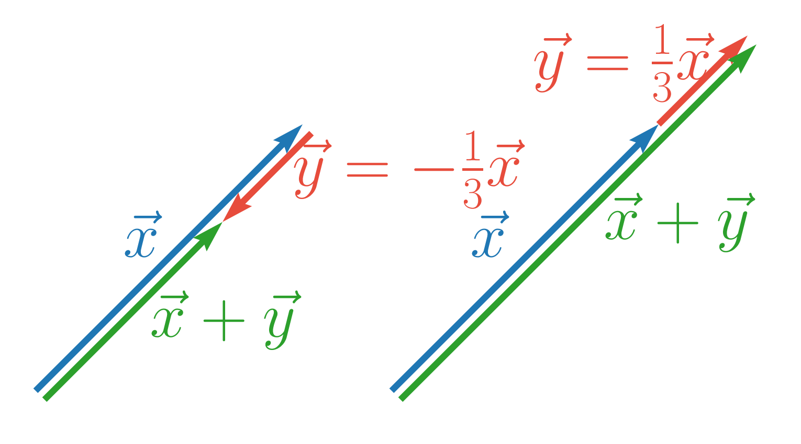
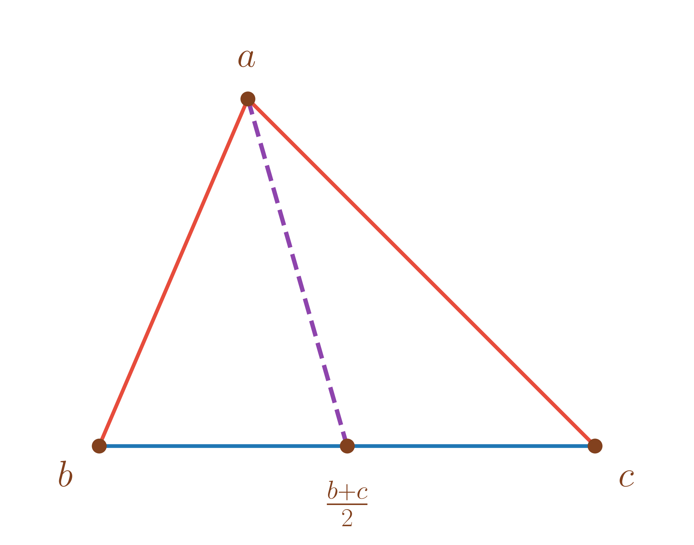
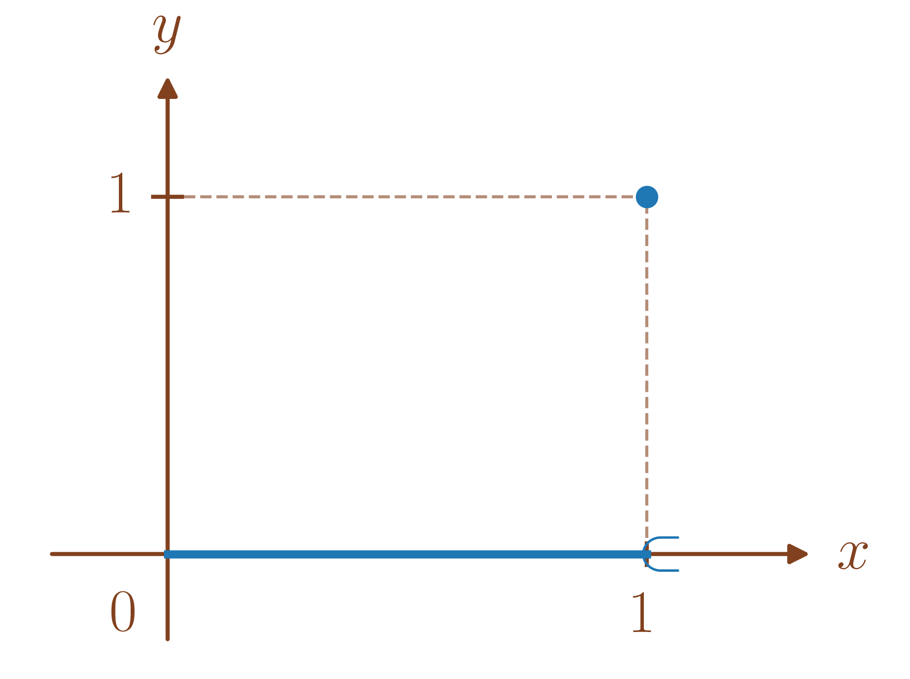
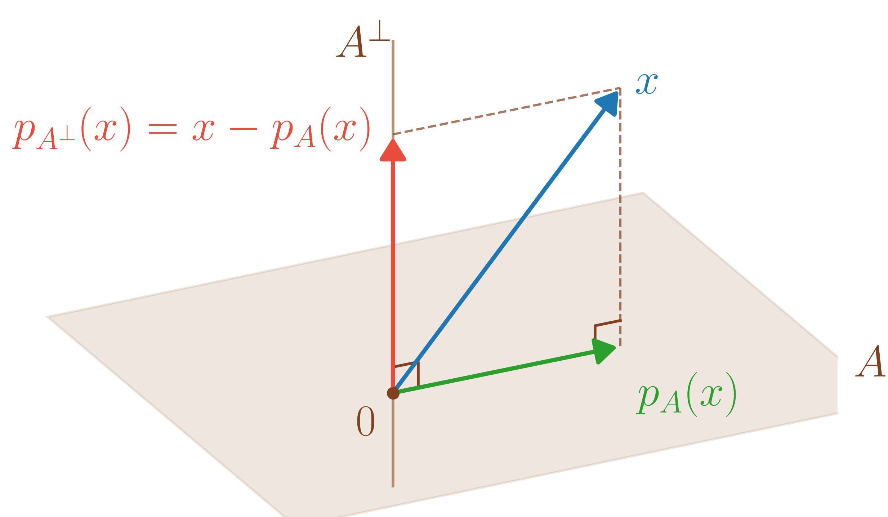
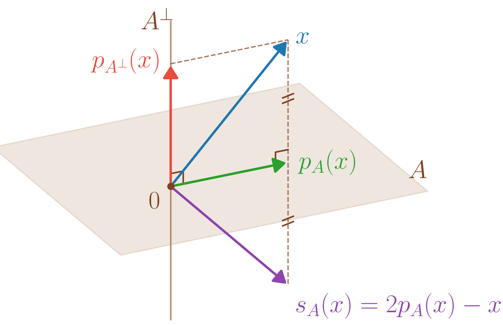
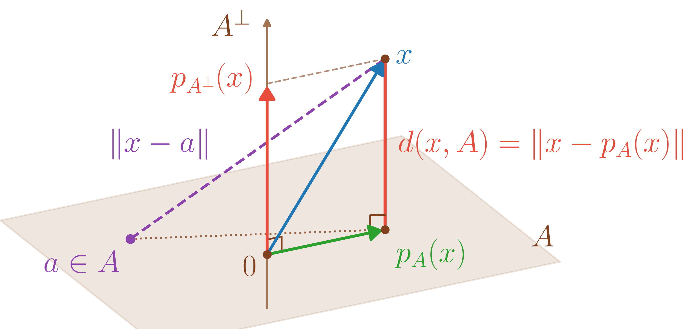
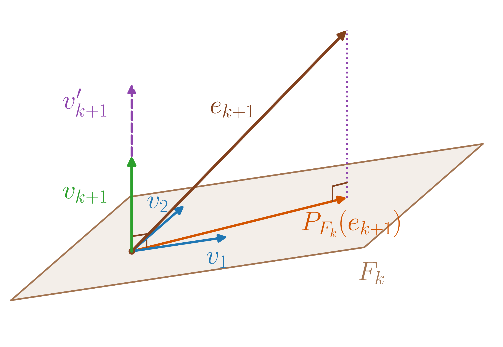

Dans tout le cours, \((E,\langle \cdot,\cdot \rangle)\) désigne un \(\mathbb{R}\)-espace préhilbertien dont on note \(\left\|\cdot\right\|\) la norme préhilbertienne associée. On commence par faire quelques rappels (voir le cours de MPSI sur les espaces euclidiens ou le cours de topologie des espaces vectoriels normés).
(Produit scalaire) Soit \(E\) un \(\mathbb{R}\)-espace vectoriel et \(\langle \cdot,\cdot \rangle : E\times E \to \mathbb{R}.\)
\(\langle \cdot,\cdot \rangle\) est un produit scalaire sur \(E\) si
\(\langle \cdot,\cdot \rangle\) est bilinéaire ie \(\langle \cdot,\cdot \rangle\) est linéaire par rapport à chacune des variables, ou encore pour tout \(u,v \in E,\) \(\begin{array}{llll} & E & \to & \mathbb{R} \\ & x & \mapsto & \langle x,v \rangle \end{array}\) est linéaire (linéarité à gauche) et \(\begin{array}{llll} & E & \to & \mathbb{R} \\ & y & \mapsto & \langle u,y \rangle \end{array}\) est linéaire (linéarité à droite).
\(\langle \cdot,\cdot \rangle\) est symétrique ie pour tout \(u,v \in E,\) \(\langle u,v \rangle = \langle v,u\rangle\)
\(\langle \cdot,\cdot \rangle\) est définie positive ie pour tout \(v \in E,\) \(\langle v,v\rangle \geq 0\) (\(\langle \cdot,\cdot \rangle\) est positive) et \(\langle v,v\rangle = 0 \iff v = 0_E\) (\(\langle \cdot,\cdot \rangle\) est définie positive).
On dit alors que \((E,\langle \cdot, \cdot \rangle)\) est un produit scalaire.
Soit \(E\) un \(\mathbb{R}\)-espace vectoriel, muni d’un produit scalaire \(\langle \cdot, \cdot \rangle,\) on pose \(\left\|x\right\| = \sqrt{\langle x,x\rangle}\) pour \(x \in E.\) Alors, \(\left\|\cdot\right\|\) est une norme dite associée au produit scalaire \(\langle \cdot, \cdot \rangle\) et est qualifiée de préhilbertienne.
(Inégalité de Cauchy-Schwarz) Soient \(u,v \in E\) alors \[\left|\langle u,v \rangle \right| \leq \left\|u\right\|\left\|v\right\|.\] De plus, il y a égalité dans l’inégalité si et seulement \((u,v)\) est liée.
(cas d’égalité de l’inégalité triangulaire) Soient \(x,y \in E,\) \[\left\|x+y\right\| \leq \left\|x\right\|+\left\|y\right\|\] et \[\left\|x+y\right\| = \left\|x\right\|+\left\|y\right\| \iff \left\{\begin{array}{ll} & x = 0_E \\ \text{ ou }& \text{ il existe $\lambda \in \mathbb{R}^{+}$ tel que $y = \lambda x.$} \end{array}\right.\]
Pour rappel,
\((x,y)\) liée (ou \(x,y\) colinéaires) \(\iff \left\{\begin{array}{ll} & x = 0_E \\ \text{ ou }& \text{ il existe $\lambda \in \mathbb{R}$ tel que $y = \lambda x.$} \end{array}\right..\)
On peut donc lire la propriété comme « \(x\) et \(y\) positivement colinéaires ».
En replongeant dans \(E = \mathbb{R}^2,\) on retrouve l’égalité de l’inégalité triangulaire avec les dessins ci-contre. On comprend aussi pourquoi il est nécessaire que \(\lambda \geq 0.\)

Ce cas d’égalité dans l’inégalité triangulaire vaut pour les normes préhilbertiennes uniquement.
Soient \(x,y \in E,\)
\[\begin{aligned} \left\|x+y\right\|^2 & =\left\|x\right\|^2+\left\|y\right\|^2+2\langle x,y \rangle\\ \left\|x-y\right\|^2 & =\left\|x\right\|^2+\left\|y\right\|^2-2\langle x,y \rangle\\ \langle x,y \rangle&=\frac{1}{4}\left(\left\|x+y\right\|^2-\left\|x-y\right\|^2\right) \quad \text{(Identité de polarisation)}\\ \left\|x+y\right\|^2+\left\|x-y\right\|^2&=2\left\|x\right\|^2+2\left\|y\right\|^2 \quad \text{(Identité du parallélogramme)}. \end{aligned}\]
Soient \(a,b,c \in E,\) en considérant \(x=a-b\) et \(y=a-c,\) on a \[\begin{aligned} \left\|x+y\right\|^2+\left\|x-y\right\|^2 & = \left\|2a-\left(b+c\right)\right\|^2+\left\|b-c\right\|^2 \\ & = 2\left\|x\right\|^2+2\left\|y\right\|^2 \\ & = 2\left\|a-b\right\|^2+2\left\|a-c\right\|^2. \end{aligned}\] Donc en divisant par \(4,\) on obtient \[\left\|a-\frac{b+c}{2}\right\|^2 = \frac{1}{2}\left\|a-b\right\|^2+\frac{1}{2}\left\|a-c\right\|^2-\frac{1}{4}\left\|b-c\right\|^2\] ce qui constitue l’égalité de la médiane.

Soit \(\left(E,\langle \cdot, \cdot, \rangle\right)\) un espace préhilbertien (normé par sa norme préhilbertienne) alors \[\begin{array}{llll} & E \times E & \to & \mathbb{R} \\ & (x,y) & \mapsto & \langle x,y \rangle \end{array}\] est continue sur \(E \times E\) en considérant la norme préhilbertienne \(\left\|\cdot\right\|\) sur \(E\) et \(\left\|(x,y)\right\|_\infty = \max{\left\|x\right\|,\left\|y\right\|}\) pour \((x,y) \in E\times E.\)
Soit \(a \in E,\) \(\begin{array}{lllll} \varphi_a & : & E & \to & \mathbb{R} \\ & & x & \mapsto & \langle a,x \rangle \end{array}\) est une forme linéaire continue sur \(E\) telle que \(\left|\!\left|\!\left|\varphi_a\right|\!\right|\!\right| = \left\|a\right\|.\)
De plus, \[\begin{array}{llll} & E & \to & E' \\ & a & \mapsto & \varphi_a \end{array}\] avec \(E' \neq E^\star\) les formes linéaires continues sur \(E,\) est linéaire et injective (donc bijective si \(E\) est de dimension finie, c’est le théorème de Riesz vu dans le cours de calcul différentiel).
Sur \(\mathbb{R}^n,\) \(x = (x_1,\ldots,x_n)\) et \(y=(y_1,\ldots,y_n),\) le produit scalaire usuel est \(\langle x,y \rangle = \sum_{i=1}^n x_iy_i.\) Remarquons qu’avec \(X = \begin{pmatrix} x_1 \\ x_2 \\ \vdots \\ x_n \end{pmatrix},Y = \begin{pmatrix} y_1 \\ y_2 \\ \vdots \\ y_n \end{pmatrix} \in \mathscr{M}_{n,1}(\mathbb{R}),\) on a \(\langle x,y \rangle = {}^tXY = ^{t}YX.\)
Soit \(E\) un \(\mathbb{R}\)-espace vectoriel et \(\mathscr{B}=\left(e_i\right)_{i\in I}\) une base de \(E\) (avec \(I\) fini ou non) alors on a le produit scalaire \(\langle \cdot,\cdot \rangle\) tel que \(\langle x,y\rangle = \sum_{i \in I} x_i y_i\) pour \(x = \sum_{i \in I} x_i e_i \in E\) et \(y = \sum_{i \in I} y_i e_i \in E.\)
Remarquons qu’alors \(\mathscr{B}\) est une base orthonormée de \(E\) avec pour \(1 \leq i,j \leq n,\) \(\langle e_i, e_j \rangle = \left\{ \begin{array}{ll} 1 & \mbox{ si $i=j$} \\ 0 & \mbox{ si $i \neq j.$} \end{array} \right.\)
Sur \(E = \mathbb{R}[X],\) on a \(\langle P,Q \rangle= \sum_{n \geq 0} a_n b_n\) pour \(P = \sum_{n\geq 0} a_n X^n\) et \(Q = \sum_{n\geq 0} b_n X^n.\)
Sur \(E =\mathscr{M}_{n}(\mathbb{R}),\) on a \(\langle A,B \rangle = \sum_{1 \leq i,j \leq n}a_{ij}b_{ij} = \mathop{\mathrm{Tr}}({}^t AB)\) pour \(A = \left(a_{ij}\right), B = \left(b_{ij}\right) \in \mathscr{M}_{n}(\mathbb{R}).\)
Sur \(\mathscr{C}([a,b],\mathbb{R}),\) on a le produit scalaire \(\langle \cdot,\cdot \rangle\) tel que \(\langle f,g\rangle = \int_a^b fg\) pour \(f,g \in \mathscr{C}([a,b],\mathbb{R}).\)
En revanche, \(\langle \cdot,\cdot \rangle\) est bien bilinéaire symétrique positive mais pas définie positive sur \(\mathscr{C}_{\mathrm{m}}\left([a,b]\right).\) La fonction \(f\) représentée ci-contre est continue par morceaux sur \([0,1]\) et vérifie \(\int_0^1 f^2=\int_0^1 f = 0\) sans qu’on ait \(f = 0.\)

Sur \(E = \left\{f : I \to \mathbb{R}\text{ continue telle que $f$ est intégrable sur $I$}\right\}\) avec \(I = \left]a,b\right[, \left[a,b\right[\) ou \(\left]a,b\right],\) on a le produit scalaire \(\langle \cdot,\cdot \rangle\) tel que \(\langle f,g\rangle = \int_a^b fg\) pour \(f,g \in E.\)
On peut généraliser le point précédent comme décrit dans la proposition ci-dessous.
Soient \(I \subset \mathbb{R}\) un intervalle tel que \(I = \left[a,b\right],\left]a,b\right[, \left[a,b\right[\) ou \(\left]a,b\right]\)
et \(\omega : I \to \mathbb{R}^{+}\) continue (que l’on appelle « fonction poids ») telle qu’il n’existe pas \(\left[c,d\right] \subset I\) tel que \(\omega_{\mid \left[c,d\right]} = 0.\)
Alors, en introduisant \(E = \left\{f : I \to \mathbb{R}\text{ continue telle que $\int_a^b f^2(t) \omega(t)dt$ converge}\right\},\)
\(\langle \cdot , \cdot \rangle\) tel que \(\langle f,g \rangle = \int_a^b f(t)g(t)\omega(t)dt\) est un produit scalaire sur \(E.\)
Structure d’espace vectoriel. Montrons que \(E\) est un sous-espace vectoriel de \(\mathscr{C}(I, \mathbb{R}),\) l’espace des fonctions continues de \(I\) dans \(\mathbb{R}.\) Tout d’abord, la fonction nulle appartient à \(E\) puisque \(\int_a^b 0 \cdot \omega(t)dt = 0\) converge, donc \(E\) est non vide. Soient ensuite \(f, g \in E\) et \(\lambda \in \mathbb{R}.\) La fonction \(\lambda f + g\) est continue comme combinaison linéaire de fonctions continues. De plus, en utilisant l’inégalité \((x+y)^2 \leq 2(x^2+y^2)\) valable pour tous réels \(x\) et \(y,\) ainsi que la positivité de \(\omega,\) on a pour tout \(t \in I,\) \[(\lambda f(t) + g(t))^2 \omega(t) \leq 2\lambda^2 f^2(t)\omega(t) + 2g^2(t)\omega(t).\] Par linéarité de l’intégrale et théorème de comparaison des intégrales de fonctions positives, la convergence de \(\int_a^b f^2(t)\omega(t)dt\) et \(\int_a^b g^2(t)\omega(t)dt\) assure celle de \(\int_a^b (\lambda f(t) + g(t))^2 \omega(t)dt.\) Ainsi, \(\lambda f + g \in E,\) ce qui prouve que \(E\) est un \(\mathbb{R}\)-espace vectoriel.
Bonne définition. Soient \(f, g \in E.\) On rappelle que pour tous réels \(x\) et \(y,\) on a \(|xy| \leq \frac{1}{2}(x^2 + y^2).\) Puisque la fonction poids \(\omega\) est positive sur \(I,\) on en déduit que pour tout \(t \in I,\) \[|f(t)g(t)\omega(t)| \leq \frac{1}{2} \left( f^2(t)\omega(t) + g^2(t)\omega(t) \right).\] Par hypothèse, les intégrales \(\int_a^b f^2(t)\omega(t)dt\) et \(\int_a^b g^2(t)\omega(t)dt\) convergent. Par linéarité et théorème de comparaison des intégrales de fonctions positives, l’intégrale \(\int_a^b f(t)g(t)\omega(t)dt\) converge absolument, et donc converge. Ainsi, \(\langle f, g \rangle\) est bien défini.
Bilinéarité et symétrie. La symétrie découle immédiatement de la commutativité de la multiplication dans \(\mathbb{R},\) donnant \(\langle f,g \rangle = \langle g,f \rangle.\) La linéarité à gauche (et donc la bilinéarité par symétrie) provient directement de la linéarité de l’intégrale convergente.
Positivité. Soit \(f \in E.\) On a \(\langle f,f \rangle = \int_a^b f^2(t)\omega(t)dt.\) Comme \(f^2 \geq 0\) et \(\omega \geq 0\) sur \(I,\) l’intégrande est une fonction positive. Par positivité de l’intégrale (avec \(a < b\)), on obtient bien \(\langle f,f \rangle \geq 0.\)
Caractère défini. Soit \(f \in E\) telle que \(\langle f,f \rangle = 0,\) c’est-à-dire \(\int_a^b f^2(t)\omega(t)dt = 0.\) La fonction \(t \mapsto f^2(t)\omega(t)\) étant continue et positive sur l’intervalle \(I\) d’intégrale nulle, elle est identiquement nulle sur \(I.\) Autrement dit, pour tout \(t \in I,\) \(f^2(t)\omega(t) = 0.\)
Raisonnons par l’absurde en supposant que \(f\) n’est pas la fonction nulle. Il existe alors \(t_0 \in I\) tel que \(f(t_0) \neq 0,\) et donc \(f^2(t_0) > 0.\) La fonction \(f^2\) étant continue en \(t_0,\) elle reste strictement positive au voisinage de \(t_0.\) Il existe donc un segment \(\left[c,d\right] \subset I\) (avec \(c < d\)) tel que pour tout \(t \in \left[c,d\right],\) \(f^2(t) > 0.\)
Or, comme \(f^2(t)\omega(t) = 0\) sur \(I,\) cela impose \(\omega(t) = 0\) pour tout \(t \in \left[c,d\right],\) soit \(\omega_{\mid \left[c,d\right]} = 0.\) Ceci contredit l’hypothèse faite sur la fonction poids \(\omega.\) On en conclut que \(f = 0,\) ce qui achève la démonstration.
Sur \(E = \ell^2(\mathbb{R}) = \left\{u = \left\{u_n\right\}_{n \geq 0} / \sum_{n\geq 0} u_n^2 \text{ converge}\right\},\) on a le produit scalaire \(\langle \cdot, \cdot \rangle\) tel que \(\langle u,v\rangle = \sum_{n=0}^{+\infty} u_nv_n\) pour \(u,v \in E\) (voir le cours sur les séries).
On peut généraliser le produit scalaire précédent, comme pour les intégrales, en considérant une suite strictement positive \(w = \left(w_n\right)_{n \geq 0}\) ainsi que \(E = \ell_{w}^2(\mathbb{R}) = \left\{u = \left\{u_n\right\}_{n \geq 0} / \sum_{n\geq 0} w_n u_n^2 \text{ converge}\right\}\) et le produit scalaire \(\langle \cdot, \cdot \rangle\) tel que \(\langle u,v\rangle = \sum_{n=0}^{+\infty} w_n u_nv_n\) pour \(u,v \in E.\)
Soient \(\left(E,\langle \cdot, \cdot \rangle\right)\) un espace préhilbertien et \(x,y \in E.\)
On dit que \(x\) et \(y\) sont orthogonaux si \(\langle x,y \rangle = 0\) et l’on note \(x \perp y.\)
\(x \perp y \iff y \perp x,\)
\(x \perp x \iff x = 0,\)
\(y \perp x\) pour tout \(x \in E\) \(\iff\) \(y = 0,\)
\(\left.\begin{array}{l} x \perp y_1 \\ x \perp y_2 \end{array}\right\} \Longrightarrow \forall \alpha, \beta \in \mathbb{R}, x\perp \alpha y_1 + \beta y_2,\)
\(x \perp y\) et \(y \perp z\) \(\centernot{\Longrightarrow}\) \(x \perp z.\)
Soit \(A \subset E,\) on dit que \(x\) est orthogonal à \(A\) si pour tout \(a \in A,\) \(x \perp a.\)
On note alors \(x\perp A.\)
Soient \(A,B \subset E,\) on dit que \(B\) est orthogonal à \(A\) si pour tout \(a \in A\) et \(b \in B,\) \(b \perp a.\)
On note alors \(A\perp B.\)
Soit \(a \in E,\) on note \[\begin{aligned} a^\perp & = \left\{x \in E/ x \perp a \right\} \\ & = \mathop{\mathrm{Ker}}\varphi_a \text{ avec } \begin{array}{lllll} \varphi_a & : & E & \to & \mathbb{R} \\ & & x & \mapsto & \langle a,x \rangle \end{array} \end{aligned}\] qui est appelé l’orthogonal de \(a.\)
Soit \(A \subset E,\) on note \[\begin{aligned} A^\perp & = \left\{x \in E/ \forall a \in A, x \perp a \right\} \\ & = \bigcap_{a \in A} a^\perp \\ & = \bigcap_{a \in A} \mathop{\mathrm{Ker}}\varphi_a \text{ avec } \begin{array}{lllll} \varphi_a & : & E & \to & \mathbb{R} \\ & & x & \mapsto & \langle a,x \rangle \end{array} . \end{aligned}\] qui est appelé l’orthogonal de \(A.\)
Soit \(a \in E,\)
Si \(a \neq 0, a^\perp\) est un hyperplan fermé de \(E.\)
Si \(a = 0,\) \(a^\perp = E.\)
Si \(a \neq 0,\) \(a^\perp = \mathop{\mathrm{Ker}}\varphi_a = \varphi_a^{-1}\left(\left\{0\right\}\right)\) avec \(\varphi_a\) qui est continue sur \(E\) et \(\left\{0\right\}\) un fermé de \(\mathbb{R}.\) De plus, \(\varphi_a \neq 0\) car \(\varphi_a(a) = \left\|a\right\|^2 \neq 0.\)
Soit \(A \subset E,\) \(A^\perp\) est un sous-espace vectoriel fermé de \(E.\)
\(A^\perp = \bigcap_{a \in A} a^\perp\) et est donc un fermé comme intersection (quelconque) de fermés et un sous-espace vectoriel comme intersection de sous-espaces vectoriels.
\(E^\perp = \left\{0\right\}\) et \(\left\{0\right\}^\perp = E.\)
\(x \perp A \iff x \in A^\perp,\)
\(A \subset B \Longrightarrow B^\perp \subset A^\perp,\)
\(A \perp B \iff \forall a \in A, a \perp B \iff A \subset B^\perp \iff B \subset A^\perp.\)
\(A \cap A^\perp = \left\{0\right\}\) donc si \(A\) est un sous-espace vectoriel, \(A + A^\perp\) est directe.
\(A \perp A^\perp\) donc \(A \subset A^{\perp \perp}.\) En revanche, \(A = A^{\perp \perp}\) n’est pas automatique car cela implique que \(A\) soit un sous-espace vectoriel fermé de \(E.\)
Si \(A = \mathop{\mathrm{Vect}}(e_i)_{i \in I},\) \(x \in A^\perp \iff \forall i \in I, \langle x, e_i \rangle = 0.\)
Soit \(A \subset E.\) Montrer que \(A^\perp = \overline{A}^\perp.\)
D’abord, \(A \subset \overline{A}\) donc \(\overline{A}^\perp \subset A^\perp.\)
Ensuite, montrons \(\overline{A}^\perp \supset A^\perp.\)
Soient \(x \in A^\perp\) et \(a \in \overline{A}\) montrons \(a \perp x = 0.\)
Il existe une suite \(\left(a_n\right)_{n \geq 0}\) de \(A\) telle que \(a_n \xrightarrow[n \to +\infty]{} a.\)
De plus, comme \(x \in A^\perp,\) pour tout \(n \geq 0,\) \(\langle x, a_n \rangle = 0.\)
Enfin, par continuité du produit scalaire, en passant à la limite quand \(n \xrightarrow{} +\infty,\) on a \(\langle x,a \rangle =0.\)
Donc \(x \in \overline{A}^\perp.\)
Soient \(I\) un ensemble quelconque et \(\left(e_i\right)_{i \in I}\) une famille de \(E.\)
On dit que \(\left(e_i\right)_{i \in I}\) est une famille orthogonale de \(E\) si \[\forall i \neq j \in I, e_i \perp e_j.\] (ie \(\forall i \in I, e_i \perp \mathop{\mathrm{Vect}}(e_j)_{j \neq i}\)).
On dit que \(\left(e_i\right)_{i \in I}\) est une famille orthonormale/orthonormée de \(E\) si \[\forall i \neq j \in I, e_i \perp e_j \text{ et }\left\|e_i\right\| = 1\] (ie \(\forall i \neq j \in I, \langle e_i, e_j \rangle = \left\{ \begin{array}{ll} 1 & \mbox{ si $i=j$} \\ 0 & \mbox{ si $i \neq j.$} \end{array} \right.\)).
Soient \(I\) un ensemble quelconque et \(\left(e_i\right)_{i \in I}\) une famille orthogonale de \(E\) de vecteurs non nuls.
Alors, \(\left(e_i\right)_{i \in I}\) est libre.
Soit \(J \subset I\) fini et \(\left(\alpha_j\right)_{j \in J}\) une famille de réels.
Alors, \[\sum_{j \in J} \alpha_j e_j = 0 \Longrightarrow \forall j_0 \in J, \langle e_{j_0},\sum_{j \in J} \alpha_j e_j \rangle = \alpha_{j_0}\left\|e_{j_0}\right\|^2 = 0.\] donc pour tout \(j_0 \in J,\) \(\alpha_{j_0} = 0\) (car \(\left\|e_{j_0}\right\|^2 \neq 0\)).
Donc \(\left(e_i\right)_{i \in I}\) est libre.
Soient \(I\) un ensemble quelconque et \(\left(e_i\right)_{i \in I}\) une famille orthonormale de \(E.\)
Alors, \(\left(e_i\right)_{i \in I}\) est libre.
Une famille orthonormale est une famille orthogonale de vecteurs non nuls (car de norme \(1\)) donc il suffit d’appliquer la proposition [prop:ortho_non_nulle_Est_libre].
Soit \(\mathscr{B}= \left(e_i\right)_{i \in I}\) une base orthonormée de \(E.\)
Soient \(x,y \in E\) tels que \(x = \sum_{i \in I} \underbrace{x_i}_{\in \mathbb{R}} e_i\) et \(y = \sum_{i \in I} \underbrace{y_i}_{\in \mathbb{R}} e_i.\)
Alors,
\(\langle x,y \rangle = \sum_{i \in I} x_i y_i,\)
\(\left\|x\right\| = \sqrt{\sum_{i\in I} x_i^2},\)
\(x_i = \langle e_i,x \rangle.\)
\(\langle x,y \rangle = \langle \sum_{i \in I} x_i e_i , \sum_{i \in I} y_j e_j\rangle = \sum_{i \in I}\sum_{j \in I} x_i y_j \underbrace{\langle e_i , e_j\rangle }_{= \left\{ \begin{array}{ll} 1 & \mbox{ si $i=j$} \\ 0 & \mbox{ si $i \neq j.$} \end{array} \right.} = \sum_{i \in I} x_i y_i.\)
En appliquant le point précédent à \(y=x,\) on a \(\langle x , x\rangle = \sum_{i \in I}x_i^2\) donc \(\left\|x\right\| = \sqrt{\sum_{i\in I} x_i^2}.\)
En appliquant le premier point à \(y= e_i,\) on a \(x_i = \langle e_i,x \rangle.\)
Si \(\mathscr{B}= \left(e_i\right)_{i \in I}\) est seulement orthogonale,
\(\langle x,y \rangle = \sum_{i \in I} x_i y_i \langle e_i , e_i\rangle ,\)
\(\left\|x\right\| = \sqrt{\sum_{i\in I} x_i^2 \langle e_i , e_i\rangle },\)
\(x_i = \frac{\langle e_i,x \rangle}{\langle e_i , e_i\rangle }.\)
Si \(\mathscr{B}= \left(e_i\right)_{i \in I}\) est seulement orthogonale, \(\mathscr{B}' = \left(\frac{e_i}{\left\|e_i\right\|}\right)_{i \in I}\) est orthonormée.
(Théorème de Pythagore) Soient \(\left(E,\langle \cdot, \cdot \rangle\right)\) un espace préhilbertien et \((x_1,\ldots,x_n)\) une famille orthogonale de \(E.\) Alors, \[\left\|x_1+\ldots+x_n\right\|^2 = \left\|x_1\right\|^2+\ldots+\left\|x_n\right\|^2.\]
\[\begin{aligned} \left\|x_1+\ldots+x_n\right\|^2 & = \langle \sum_{i=1}^n x_i, \sum_{j=1}^n x_j \rangle \\ & = \sum_{1 \leq i,j \leq n} \langle x_i, x_j \rangle \\ & = \sum_{1 \leq i=j \leq n} \langle x_i, x_j \rangle +\sum_{1 \leq i\neq j \leq n} \langle x_i, x_j \rangle \\ & = \sum_{i=1}^n \left\|x_i\right\|^2+2\sum_{1 \leq i < j \leq n} \underbrace{\langle x_i,x_j\rangle}_{=0} \\ & = \sum_{i=1}^n \left\|x_i\right\|^2. \end{aligned}\]
La réciproque est vraie pour \(n=2\) car alors \(\left\|x_1+x_2\right\|^2 = \left\|x_1\right\|^2+\left\|x_2\right\|^2+2\langle x_1 , x_2\rangle\) donc \(\left\|x_1+x_2\right\|^2 = \left\|x_1\right\|^2+\left\|x_2\right\|^2 \Longrightarrow \langle x_1 , x_2\rangle =0.\)
Soient \(F_1,\ldots,F_p\) des sous-espaces vectoriels de \(E.\)
On dit que \(F_1+\ldots+F_p\) est orthogonale si pour tout \(1 \leq i \neq j \leq p,\) \(F_i \perp F_j.\)
On note alors \({\underset{1 \leq i \leq p}{\oplus^\perp}} F_i.\)
Soient \(F_1,\ldots,F_p\) des sous-espaces vectoriels de \(E\) tels que \(F_1+\ldots+F_p\) est orthogonale.
Alors \(F_1+\ldots+F_p\) est directe.
Soient \(x_1,\ldots,x_p\) tels que \(x_j \in F_j\) pour \(1 \leq j \leq p\) et \(x_1+\ldots+x_p = 0.\)
Alors, pour \(1 \leq j \leq p,\) \[\underbrace{\langle x_1 , x_j\rangle }_{=0} +\ldots+\underbrace{\langle x_j , x_j\rangle }_{=\left\|x_j\right\|^2}+\ldots+\underbrace{\langle x_p , x_j\rangle }_{=0} = \underbrace{\langle 0 , x_j\rangle }_{=0}\] donc \[\left\|x_j\right\|^2 = 0\] et \(x_1=\ldots=x_p = 0.\) Donc \(F_1+\ldots+F_p\) est directe.
Soit \((e_i)_{i \in I}\) une base orthogonale de \(E\) telle que \(I = \bigcap_{1 \leq i \leq p} I_j\) avec \(I_{i} \cap I_j = \emptyset\) pour \(i \neq j\) (\((I_{j})_{1 \leq j \leq p}\) est une partition de \(I\)).
Alors, en notant \(F_j = \mathop{\mathrm{Vect}}(e_i)_{i \in I_j},\) \(F_1+\ldots+F_p\) est orthogonale telle que \(E = {\underset{1 \leq i \leq p}{\oplus^\perp}}F.\)
Réciproquement, si \(E = {\underset{1 \leq i \leq p}{\oplus^\perp}} F_i\) alors en considérant \(\mathscr{B}_i\) une base orthogonale de \(F_i\) pour \(1 \leq i \leq p,\) \(\mathscr{B}= (B_1,\ldots,\mathscr{B}_p)\) est une base orthogonale de \(E.\)
Soit \(A\) un sous-espace vectoriel de \(E\) de dimension \(p \in \mathbb{N}.\)
Alors, \[E = A \oplus A^\perp.\]
De plus, soient \((e_1,\ldots,e_p)\) une base orthonormée de \(A\) et \(x \in E\) tel que \(x = \underbrace{x_A}_{\in A}+\underbrace{x_{A^\perp}}_{\in A^\perp}\) alors \[x_A = \sum_{j=1}^p \langle x , e_j\rangle e_j.\]
Soit \(x \in E,\) pour tout \(1 \leq i \leq p,\) \[\left\langle x-\sum_{j=1}^p \langle x , e_j\rangle e_j , e_i\right\rangle = \langle x , e_i\rangle -\sum_{j=1}^p \langle x , e_j\rangle \langle e_j , e_i\rangle = \langle x , e_i\rangle -\langle x , e_i\rangle \langle e_i , e_i\rangle = 0.\]
Donc \(x = \underbrace{\sum_{j=1}^p \langle x , e_j\rangle e_j}_{\in A}+\underbrace{x-\sum_{j=1}^p \langle x , e_j\rangle e_j}_{\in A^\perp}\) et \(E = A+A^\perp.\)
De plus, \(A \cap A^\perp = \left\{0\right\}\) donc \(E = A \oplus A^\perp.\)
On verra dans l’exercice [exoc:ortho_De_ortho] que dans ce cas, \(A = A^{\perp \perp}.\)
Soit \(A\) un sous-espace vectoriel de \(E\) de dimension \(p \in \mathbb{N}.\)
On définit \[\begin{array}{lllll} p_A & : & E & \to & E \\ & & x & \mapsto & x_A \text{ avec }x= \underbrace{x_A}_{\in A}+\underbrace{x_{A^\perp}}_{\in A^\perp} \end{array} ,\] la projection sur \(A\) parallèlement à \(A^\perp,\) qui est appelée la projection orthogonale sur \(A.\)
Par la proposition [prop:verS_proj_ortho], soient \((e_1,\ldots,e_p)\) une base orthonormée de \(A\) et \(x \in E\) alors \[p_A(x) = \sum_{j=1}^p \langle x , e_j\rangle e_j.\]
On définit aussi \[\begin{array}{lllll} p_{A^\perp} & : & E & \to & E \\ & & x & \mapsto & x_{A^\perp} \text{ avec }x= \underbrace{x_A}_{\in A}+\underbrace{x_{A^\perp}}_{\in A^\perp} \end{array}\] qui est appelée la projection orthogonale sur \(A^\perp.\)
On définit \[\begin{array}{lllll} s_A & : & E & \to & E \\ & & x & \mapsto & x_A-x_{A^\perp} \text{ avec }x= \underbrace{x_A}_{\in A}+\underbrace{x_{A^\perp}}_{\in A^\perp} \end{array} ,\] la symétrie sur \(A\) parallèlement à \(A^\perp,\) qui est appelée la symétrie orthogonale sur \(A.\)
et \[\begin{array}{lllll} s_{A^\perp} & : & E & \to & E \\ & & x & \mapsto & -x_A+x_{A^\perp} \text{ avec }x= \underbrace{x_A}_{\in A}+\underbrace{x_{A^\perp}}_{\in A^\perp} \end{array}\] qui est appelée la symétrie orthogonale sur \(A^\perp.\)
\(p_A+p_{A^\perp} = \mathop{\mathrm{Id}},\)
\(s_{A^\perp} = -s_A,\)
\(s_A = 2p_A -\mathop{\mathrm{Id}}.\)
Soit \(x \in E,\) \(p_A(x)\) est le seul élément vérifiant \(p_A(x) \in A\) et \(\langle x - p_A(x),p_A(x) \rangle = 0.\)
\(\langle x - p_A(x),p_A(x) \rangle = 0 \Longrightarrow \langle x,p_A(x) \rangle = \left\|p_A(x)\right\|^2 \geq 0.\)
Soit \(A\) un sous-espace vectoriel de \(E\) de dimension finie.
En notant \(p_A\) la projection orthogonale sur \(A,\) \[\left\|p_A(x)\right\| \leq \left\|x\right\|\] avec égalité si et seulement si \(x \in A.\)

En notant \(p_A\) la projection orthogonale sur \(A,\) \[\left\|s_A(x)\right\| = \left\|x\right\|.\]

Par Pythagore, (voir la figure de la proposition pour une illustration),
\[\left\|x\right\|^2 = \left\|p_A(x)\right\|^2 + \|\underbrace{x-p_{A}(x)}_{=p_{A^\perp}(x)}\|^2\]
donc \(\left\|x\right\|^2 \leq \left\|p_A(x)\right\|^2 \iff \left\|x\right\| \leq \left\|p_A(x)\right\|\) avec égalité si et seulement si \(\left\|x-p_{A}(x)\right\| = 0\) ie \(x=p_A(x) \in A.\)
Par Pythagore, (voir la figure de la proposition pour une illustration), \[\begin{aligned} \left\|x\right\|^2 & = \left\|p_A(x)\right\|^2 + \left\|p_{A^\perp}(x)\right\|^2 \\ \text{ et } \left\|s_A(x)\right\|^2 & = \left\|p_A(x)\right\|^2 + \left\|-p_{A^\perp}(x)\right\|^2 \\ \end{aligned}\] donc \(\left\|s_A(x)\right\| = \left\|x\right\|.\)
De même, \(\left\|p_{A^{\perp}}(x)\right\| \leq \left\|x\right\|\) avec égalité si et seulement si \(x \in A^\perp\) et \(\left\|s_{A^{\perp}}(x)\right\| = \left\|x\right\|.\)
On a alors \(p_A\) et \(s_A\) qui sont \(1\)-lispschitzienne ie \[\forall x,y \in E, \left\|p_A(x-y)\right\| = \left\|p_A(x)-p_A(y)\right\| \leq \left\|x-y\right\|\] et \[\forall x,y \in E, \left\|s_A(x-y)\right\| = \left\|s_A(x)-s_A(y)\right\| = \left\|x-y\right\|.\]
En particulier, \(\left|\!\left|\!\left|p_A\right|\!\right|\!\right| = 1\) (sauf si \(A = \left\{0\right\}\)) et \(\left|\!\left|\!\left|s_A\right|\!\right|\!\right| = 1.\)
Soient \(A,B\) deux sous-espaces vectoriels de \(E\) de dimension quelconque tels que \(E = A\oplus F.\)
Soit \(\begin{array}{lllll} p & : & E & \to & E \\ & & x & \mapsto & x_A \text{ avec }x = \underbrace{x_A}_{\in A}+ \underbrace{x_B}_{\in B} \end{array} ,\) la projection sur \(A\) parallèlement à \(B.\)
Montrer \[\forall x \in E, \left\|p(x)\right\| \leq \left\|x\right\| \iff B = A^\perp\] (ie \(p\) est la projection orthogonale sur \(A\)).
Soit \(\begin{array}{lllll} s & : & E & \to & E \\ & & x & \mapsto & x_A-x_B \text{ avec }x = \underbrace{x_A}_{\in A}+ \underbrace{x_B}_{\in B} \end{array} ,\) la symétrie sur \(A\) parallèlement à \(B.\)
Montrer \[\forall x \in E, \left\|s(x)\right\| = \left\|x\right\| \iff B = A^\perp\] (ie \(s\) est la symétrie orthogonale sur \(A\)).
\((\Longleftarrow)\) est donné par la proposition [prop:pythagore_et_projection] (on peut remarquer que la dimension de \(A\) n’est utilisée que pour l’existence de \(p_A,\) ie \(E = A \oplus A^\perp\)).
\((\Longrightarrow).\) Soient \(a \in A\) et \(b \in B\) alors
\(\left\|a+b\right\|^2 = \left\|a\right\|^2+\left\|b\right\|^2+2\langle a , b\rangle\) et \(\left\|p(a+b)\right\|^2 = \left\|a\right\|^2 \leq \left\|a+b\right\|^2.\)
Donc \(\left\|b\right\|^2+2\langle a , b\rangle \geq 0.\)
En remplaçant \(a\) par \(\lambda a\) avec \(\lambda \in \mathbb{R},\) on a donc \(\left\|b\right\|^2+2\lambda\langle a , b\rangle \geq 0.\)
\(\lambda \in \mathbb{R}\mapsto 2\lambda\langle a , b\rangle\) est donc une fonction affine toujours positive, ce qui implique \(\langle a , b\rangle = 0.\)
On en déduit \(B \perp A\) donc \(B \subset A^\perp.\)
Montrons l’inclusion inverse. Soit \(x \in A^\perp\) alors on le décompose en \(x = \underbrace{x_A}_{\in A}+ \underbrace{x_B}_{\in B}.\)
On a alors \(0 = \langle x , x_A\rangle = \underbrace{\langle x_A , x_A\rangle }_{=\left\|x_A\right\|^2}+\underbrace{\langle x_B , x_A\rangle }_{\substack{=0 \\ \text{ car $B \subset A^\perp$}}}\) donc \(x_A = 0\) et \(x=x_B \in B.\)
On en déduit donc bien finalement \(B = A^\perp.\)
\((\Longleftarrow)\) est donné par la proposition [prop:pythagore_et_projection] (on peut remarquer que la dimension de \(A\) n’est utilisée que pour l’existence de \(s_A,\) ie \(E = A \oplus A^\perp\)).
\((\Longrightarrow).\)
En reprenant la projection de la question précédente, \(s = 2p-\mathop{\mathrm{Id}}\iff p = \frac{s+\mathop{\mathrm{Id}}}{2}.\)
Donc pour tout \(x \in E,\) \(\left\|p(x)\right\| = \frac{1}{2}\left\|s(x)+x\right\| \leq \frac{1}{2}(\left\|s(x)\right\|+\left\|x\right\|) = \left\|x\right\|.\)
Donc, par la question précédente, \(B = A^\perp.\)
Soit \(A\) un sous-espace vectoriel de \(E\) de dimension finie.
Alors, \(E = A \oplus A^\perp\) par la proposition [prop:verS_proj_ortho] et on note \(p_A\) et \(p_{A^\perp}\) les projections orthogonales sur \(A\) et \(A^\perp.\)
Alors, soit \(x \in E,\) \[d(x,A) = \inf_{a \in A}\left\|x-a\right\| = \left\|x-p_A(x)\right\| = \left\|p_{A^\perp}(x)\right\|.\] De plus, \(d(x,A)\) n’est atteinte qu’en \(p_A(x).\)

Soit \(a \in A\) alors \(x-a = \underbrace{x-p_A(x)}_{\in A^\perp} + \underbrace{p_A(x)-a}_{\in A}.\)
On en déduit donc par Pythagore, \[\left\|x-a\right\|^2 = \left\|x-p_A(x)\right\|^2+\left\|p_A(x)-a\right\|^2\] puis \[\left\|x-p_A(x)\right\| \leq \left\|x-a\right\|\] avec égalité si et seulement si \(\left\|p_A(x)-a\right\|^2 = 0 \iff \left\|p_A(x)-a\right\| = 0 \iff a=p_A(x).\)
On aussi \(d(x,A^\perp) = \left\|x - p_{A^\perp}(x)\right\| = \left\|p_A(x)\right\|\) et cette distance est atteinte seulement en \(p_{A^\perp}(x).\)
Par Pythargore, \(\left\|x\right\|^2 = \left\|p_{A}(x)\right\|^2+\left\|p_{A^\perp}(x)\right\|^2 = d(x,A)^2+d(x,A^\perp)^2.\)
Soit \((e_1,\ldots,e_p)\) une base orthonormée de \(A\) alors \(p_A(x) = \sum_{j=1}^p \langle x,e_j \rangle e_j\) et \(p_{A^\perp}(x) = x- \sum_{j=1}^p \langle x,e_j \rangle e_j\) donc \[d(x,A) = \sum_{j=1}^p \langle x,e_j \rangle^2 \text{ et }d(x,A^\perp) = \sqrt{\left\|x\right\|^2-\left\|p_A(x)\right\|^2} = \sqrt{\left\|x\right\|^2-\sum_{j=1}^p \langle x,e_j \rangle^2}.\]
Si \(A = \mathop{\mathrm{Vect}}(a)\) avec \(a \neq 0\) est une droite alors \(A^\perp = \mathop{\mathrm{Ker}}\varphi_a\) (avec \(\varphi_a : x \in E \mapsto \langle a,x \rangle\)) est un hyperplan.
De plus, \(\left(\frac{a}{\left\|a\right\|}\right)\) est une base orthonormée de \(A\) donc soit \(x \in E,\) \[\begin{aligned} p_A(x) & = \langle x , \frac{a}{\left\|a\right\|}\rangle \frac{a}{\left\|a\right\|} = \frac{\langle x , a\rangle }{\langle a , a\rangle }a, \\ p_{A^\perp}(x) & = x-p_A(x) = x-\frac{\langle x , a\rangle }{\langle a , a\rangle }a, \\ \text{donc } d(x,A^\perp) & = \left\|p_A(x)\right\| = \frac{\left|\langle x , a\rangle \right|}{\langle a , a\rangle }\left\|a\right\| = \frac{\left|\langle x , a\rangle \right|}{\left\|a\right\|} \\ \text{ puis } \left\|x\right\|^2 & = \left\|p_{A}(x)\right\|^2+\left\|p_{A^\perp}(x)\right\|^2 \\ \text{ donc } d(x,A) & = \left\|p_{A^\perp}\right\| = \sqrt{\left\|x\right\|^2-\frac{\left|\langle x , a\rangle \right|^2}{\langle a , a\rangle }} \end{aligned}\]
On donne un exemple concret du point précédent avec \(E = \mathbb{R}^3\) muni du produit scalaire canonique \(\langle \cdot,\cdot\rangle\) pour \(A = \mathop{\mathrm{Vect}}(a)\) avec \(a = \begin{pmatrix} 2 \\ 1 \\ -2 \end{pmatrix}\) et \(x = \begin{pmatrix} 1 \\ 1 \\ 1 \end{pmatrix}.\)
On a alors \(H = a^\perp = \left\{X = \begin{pmatrix} x \\y \\ z \end{pmatrix} / \langle X , a\rangle = 2x+y-2z = 0\right\}\) qui est un hyperplan donné par l’équation (dans le base canonique) \(2x+y-2z=0.\)
Puis, on a \(\left\|a\right\| = \sqrt{4+1+4} = 3.\)
Donc \[\begin{aligned} p_A(x) & = \frac{\langle x , a\rangle }{\langle a , a\rangle }a = \frac{1}{9}\begin{pmatrix} 2 \\ 1 \\ -2 \end{pmatrix} \\ p_{A^\perp}(x) & = x-p_A(x) = \frac{1}{9}\begin{pmatrix} 7 \\ 8 \\ 11 \end{pmatrix} , \\ \text{donc } d(x,A^\perp) & = \left\|p_A(x)\right\| = \frac{3}{9} = \frac{1}{3}\\ \text{ puis } d(x,A) & = \left\|p_{A^\perp}\right\| = \frac{\sqrt{49+64+121}}{9} =\frac{\sqrt{26}}{3}. \end{aligned}\]
Dans le cas où \(A\) est un sous-espace vectoriel de \(E\) de dimension infinie, il se peut que \(E \neq A {\underset{}{\oplus^\perp}} A^\perp.\)
Un cas extrême est un cas où \(\overline{A} = E\) (\(A\) est dense dans \(E\)) car dans ce cas, par l’exercice [exoc:ortho_Adherence], \(A^\perp = \overline{A}^\perp = E^\perp = \left\{0\right\}\) et \(E = A {\underset{}{\oplus^\perp}} A^\perp \iff A=E.\)
Dans l’espace préhilbertien \(E = \mathscr{C}([a,b],\mathbb{R})\) muni de \(\langle \cdot,\cdot\rangle\) tel que \(\langle f , g\rangle = \int_a^b f(t)g(t)dt\) pour \(f,g \in E,\) on considère \(A\) le sous-espace vectoriel des fonctions polynomiales.
On a alors \(\overline{A} = E.\) En effet, par théorème de Weierstrass, soit \(f \in E,\) il existe \(\left(p_n\right)_{n \geq 0}\) une suite de \(A\) telle que \(\left\|f-p_n\right\|_{\infty,[a,b]} \xrightarrow[n \to +\infty]{} 0.\)
Or, \(\left\|p_n-f\right\|^2 = \int_a^b \left(p_n(t)-f(t)\right)^2dt \leq (b-a)\left\|f-p_n\right\|_{\infty,[a,b]}^2 \xrightarrow[n \to +\infty]{} 0.\)
Donc \(p_n \xrightarrow[n \to +\infty]{\left\|\cdot\right\|} f.\)
On a donc un exemple tel que \(A^\perp = \overline{A}^\perp = \left\{0\right\}\) et \(A \neq E\) donc \(E \neq A {\underset{}{\oplus^\perp}} A^\perp.\)
Malgré tout, si \(A\) vérifie \(E \neq A {\underset{}{\oplus^\perp}} A^\perp,\) toutes les propriétés précédents sont conservées (en particulier l’existence de \(p_A\) et l’écriture de la distance à \(A\) à l’aide de \(p_A\)).
Soient \(A,B\) deux sous-espaces vectoriels de dimension quelconque tels que \(E = A {\underset{}{\oplus^\perp}} B.\)
Montrer que \(B = A^\perp\) et \(A = B^\perp.\)
En particulier, \(A\) et \(B\) sont fermés.
Comme \(A\) et \(B\) jouent un rôle symétrique, il suffit de montrer \(A = B^\perp.\) On procède par double-inclusion.
D’abord, \(A \perp B\) (comme la somme est orthogonale) donc \(A \subset B^\perp.\)
Soit \(x \in B^\perp,\) on le décompose en \(x = \underbrace{x_A}_{\in A}+ \underbrace{x_B}_{\in B}.\) Alors, \(0 = \langle x , x_B\rangle = \underbrace{\langle x_A , x_B\rangle }_{\substack{ = 0 \\ \text{ car $A \perp B$}}} + \left\|x_B\right\|^2.\)
Donc \(\left\|x_B\right\|^2 = 0 \iff x_B = 0 \iff x = x_A \in A\) et on en déduit \(B^\perp \subset A.\)
Dans ce cas, \(A = A^{\perp \perp}\) (avec \(B = A^\perp,\) \(A = B^\perp\)).
Pour \(H\) un hyperplan de \(E,\) \(H^\perp\) n’est pas forcément une droite. En effet, cela implique \(E = H {\underset{}{\oplus^\perp}} H^\perp\) donc \(H = H^{\perp \perp}\) puis que \(H\) soit un fermé (ce qui n’est pas le cas de tous les hyperplans en dimension infinie !).
La preuve de la proposition suivante (ou l’exemple qui suit) est tout aussi importante que son énoncé. Elle applique une méthode appelée l’algorithme de Gram-Schmidt.
Soit \((e_1,\ldots,e_n)\) une famille libre quelconque de \(E.\)
Alors, il existe \((v'_1,\ldots,v'_n)\) famille orthogonale de vecteurs non nuls de \(E\) telle que pour tout \(1 \leq k \leq n,\) \(\mathop{\mathrm{Vect}}(e_1,\ldots,e_k) = \mathop{\mathrm{Vect}}(v'_1,\ldots,v'_k)\)
et \((v_1,\ldots,v_n)\) telle que \(v_i = \frac{1}{\left\|v'_i\right\|}v'_i\) pour \(1 \leq i \leq n\) est une famille orthonormée de \(E\) telle que pour tout \(1 \leq k \leq n,\) \(\mathop{\mathrm{Vect}}(e_1,\ldots,e_k) = \mathop{\mathrm{Vect}}(v_1,\ldots,v_k).\)
Construisons pas à pas \((v_1,\ldots,v_n).\)
(1) Pour \(v_1,\) il suffit de prendre \(v_1 = \frac{1}{\left\|e_1\right\|}e_1,\) de sorte que \(\left(v_1\right)\) est orthonormée et \(\mathop{\mathrm{Vect}}(e_1) = \mathop{\mathrm{Vect}}(v_1).\)
⋮
\((k+1).\)
Supposons que l’on a construit \((v_1,\ldots,v_k)\) famille orthonormée telle que pour \(1 \leq i \leq k,\) \(\mathop{\mathrm{Vect}}(e_1,\ldots,e_i) = \mathop{\mathrm{Vect}}(v_1,\ldots,v_i).\)
On pose \(F_k = \mathop{\mathrm{Vect}}(v_1,\ldots,v_k)\) et on considère \(v'_{k+1} = e_{k+1}-p_{F_k}(e_{k+1}).\)
Alors, \((v_1,\ldots,v_k,v'_{k+1})\) est orthogonale (car \(v'_{k+1} = e_{k+1}-p_{F_k}(e_{k+1}) \in F_k^{\perp}\)).

Donc \((v_1,\ldots,v_k,v_{k+1})\) est orthonormée avec \(v_{k+1} = \frac{1}{\left\|v'_{k+1}\right\|}v'_{k+1}.\)
Il reste à vérifier que \(\mathop{\mathrm{Vect}}(e_1,\ldots,e_k,e_{k+1}) = \mathop{\mathrm{Vect}}(v_1,\ldots,v_k,v_{k+1}).\)
Or, \(\mathop{\mathrm{Vect}}(v_1,\ldots,v_k) = \mathop{\mathrm{Vect}}(e_1,\ldots,e_k).\)
De plus, \(v_{k+1} = \frac{1}{v'_{k+1}}\left(e_{k+1}-\underbrace{p_{F_k}(e_{k+1})}_{\in \mathop{\mathrm{Vect}}(e_1,\ldots,e_k)}\right) \in \mathop{\mathrm{Vect}}(e_1,\ldots,e_{k+1})\) donc \(\mathop{\mathrm{Vect}}(e_1,\ldots,e_k,e_{k+1}) \supset \mathop{\mathrm{Vect}}(v_1,\ldots,v_k,v_{k+1}).\)
Enfin, \(\dim \mathop{\mathrm{Vect}}(e_1,\ldots,e_k,e_{k+1}) = \dim \mathop{\mathrm{Vect}}(v_1,\ldots,v_k,v_{k+1}) = k+1\) donc on a bien \(\mathop{\mathrm{Vect}}(e_1,\ldots,e_k,e_{k+1}) = \mathop{\mathrm{Vect}}(v_1,\ldots,v_k,v_{k+1}).\)
Comme \(F_k = \mathop{\mathrm{Vect}}(v_1,\ldots,v_k)\) et que \((v_1,\ldots,v_k)\) est orthonormée, \(p_{F_k}(v) = \sum_{i=1}^k (v \mid v_i)v_i.\)
⋮
(\(n\)) A l’étape \(n,\) on a construit une famille orthonormée qui vérifie \(\mathop{\mathrm{Vect}}(e_1,\ldots,e_n) = \mathop{\mathrm{Vect}}(v_1,\ldots,v_n).\)
Avec \(v'_1 = e_1,\) pour \(1 \leq k \leq n,\)\(\langle v'_k, e_k\rangle > 0\) car pour \(k \geq 2,\) \(v'_{k} = e_k - p_{F_{k-1}}(e_k)\) donc \(\langle v'_k, e_k\rangle = \left\|e_k\right\|^2-\underbrace{\langle p_{F_{k-1}}(e_k), e_k\rangle}_{=0}\) et pour \(k=1,\) \(v'_k = e_k.\)
Si \(\dim E = n,\) on a deux bases et on remarque, avec \(v'_1 = e_1,\) \[\forall 2 \leq k \leq n, v'_{k} = e_{k} - p_{F_{k-2}}(e_{k})\] et \(v'_1 = e_1\) donc la matrice de passage de \(\mathscr{B}= (e_1,\ldots,e_n)\) à \(\mathscr{B}' = (v'_1,\ldots,v'_n)\) s’écrit \[p_{\mathscr{B},\mathscr{B}'} = \begin{pmatrix} 1 & & & & \\ & \ddots & & ?? & \\ & & \ddots & & \\ & (0) & & \ddots & \\ & & & &1 \\ \end{pmatrix}\] et celle de \(\mathscr{B}= (e_1,\ldots,e_n)\) à \(\mathscr{B}'' = (v_1,\ldots,v_n),\) \[p_{\mathscr{B},\mathscr{B}''} = \begin{pmatrix} \frac{1}{\left\|v'_1\right\|} & & & & \\ & \ddots & & ?? & \\ & & \ddots & & \\ & (0) & & \ddots & \\ & & & & \frac{1}{\left\|v'_n\right\|} \\ \end{pmatrix}\] puis sont inverse \[p_{\mathscr{B}'',\mathscr{B}} = \begin{pmatrix} \left\|v'_1\right\| & & & & \\ & \ddots & & ?? & \\ & & \ddots & & \\ & (0) & & \ddots & \\ & & & & \left\|v'_n\right\| \\ \end{pmatrix}.\]
Dans \(E = \mathbb{R}_2[X],\) \(\begin{array}{lllll} \varphi & : & E \times E & \to & \mathbb{R} \\ & & (P,Q) & \mapsto & P(0)Q(0)+P(1)Q(1)+P(2)Q(2) \end{array}\) est un produit scalaire.
En effet,
\(\varphi\) est clairement symétrique,
\(\varphi\) est linéaire à gauche car pour \(P_1,P_2 \in E\) et \(\lambda \in \mathbb{R},\) \[\varphi(P_1+\lambda P_2,Q) = \varphi(P_1,Q)+\lambda \varphi(P_2,Q).\]
\(\varphi\) est définie positive car pour \(P \in \mathbb{R}_2[X],\) \(\varphi(P,P) = P(0)^2+P(1)^2+P(2)^2 \geq 0\) et \(\varphi(P,P) = 0\) implique \(P(0) = P(1) = P(2) = 0\) (comme somme de réels positifs) donc \(P\) admet trois racines distinctes malgré \(\deg(P) \leq 2\) donc \(P = 0.\)
Appliquons l’algorithme de Gram-Schmidt à \((1,X,X^2).\) On construit \((v_1,v_2,v_3).\)
D’abord, \(v_1 = \frac{1}{\left\|1\right\|}1 = \frac{1}{\sqrt{3}}.\)
Ensuite, \(v'_2 = X- p_{F_1}(X)\) avec \(F_1 = \mathop{\mathrm{Vect}}(v_1)\) et \((v_1)\) orthonormée.
On a donc \(p_{F_1}(X) = \varphi(X,v_1).v_1 = \frac{3}{\sqrt{3}}.\frac{1}{\sqrt{3}} = 1\) puis \(v'_2 = X-1\)
et \(v_2 = \frac{1}{\left\|v'_2\right\|}v'_2 = \frac{1}{\sqrt{2}}\left(X-1\right).\)
Enfin, \(v'_3 = X- p_{F_2}(X^2)\) avec \(F_2 = \mathop{\mathrm{Vect}}(v_1,v_2)\) et \((v_1,v_2)\) orthonormée.
On a donc \[\begin{aligned} p_{F_2}(X^2) & = \varphi(X^2,v_1).v_1+\varphi(X^2,v_2).v_2 \\ & = \varphi(X^2,\frac{1}{\sqrt{3}}).\frac{1}{\sqrt{3}}+\varphi(X^2,\frac{X-1}{\sqrt{2}}).\frac{X-1}{\sqrt{2}} \\ & = \frac{1}{3}\varphi(X^2,1)+\frac{1}{2}\varphi(X^2,X-1)(X-1) \\ & = \frac{5}{3}+\frac{4}{2}(X-1) \\ & = 2X-\frac{1}{3} \end{aligned}\]
puis \(v'_3 = X^2-2X+\frac{1}{3}\)
et \(\left\|v'_3\right\|^2 = \frac{1}{9}+\frac{4}{9}+\frac{1}{9} = \frac{6}{9} = \frac{2}{3}\) donc \(v_3 = \frac{1}{\left\|v'_3\right\|}v'_3= \sqrt{\frac{3}{2}}\left(X^2-2X+\frac{1}{3}\right).\)
Dans le cas où \(E = \mathbb{R}[X]\) (où \(E = \mathscr{P}(I,\mathbb{R})\) les fonctions polyomiales sur \(I\)), on peut appliquer l’algorithme de Gram-Schmidt \((X^n)_{n \geq 0}.\) On construit alors \(\left(P_n\right)_{n \geq 0}\) pour qu’elle soit orthogonale et \(\left(Q_n\right)_{n \geq 0}\) pour qu’elle soit orthonormée (à l’image de l’exemple [ex:petit_Ex_polynomes]) tel que
\(P_0 = 1\) et \(Q_0 = \frac{P_0}{\left\|P_0\right\|}\) en normalisant qui sont de degré \(0.\)
Puis pour \(n \in \mathbb{N}^{\star},\) en supposant \(\deg(P_k) = \deg(Q_k) = k\) pour tout \(k \leq n-1\) alors \(\mathop{\mathrm{Vect}}(P_0,\ldots,P_{n-1}) = \mathop{\mathrm{Vect}}(Q_0,\ldots,Q_{n-1}) = \mathbb{R}_{n-1}[X]\) et \[\begin{aligned} P_n & = X^n - \sum_{i=0}^{n-1} \langle Q_i , X^n\rangle Q_i \\ & = X^n - \sum_{i=0}^{n-1}\frac{\langle P_i , X^n\rangle }{\langle P_i , P_i\rangle }P_i \\ & = X^n - p_{\mathop{\mathrm{Vect}}(Q_0,\ldots,Q_{n-1})}(X^n) \\ & = X^n - \underbrace{P_{\mathbb{R}_{n-1}[X]}(X^n)}_{\text{ de degré $\leq n-1$}} \end{aligned}\] et \(Q_n = \frac{P_n}{\left\|P_n\right\|}\) sont de degré \(n.\)
On remarque alors
\(\left(P_0,\ldots,P_n\right)\) est une base orthogonale de \(\mathbb{R}_n[X],\)
\(\deg(P_n) = n\) pour tout \(n,\)
\(P_n\) est unitaire pour tout \(n\)
\(\left(P_n\right)_{n \in \mathbb{N}}\) est une base orthogonale de \(\mathbb{R}[X],\)
\(\left(Q_0,\ldots,Q_n\right)\) est une base orthonormée de \(\mathbb{R}_n[X],\)
\(\deg(Q_n) = n\) pour tout \(n,\)
\(\left(Q_n\right)_{n \in \mathbb{N}}\) est une base orthonormée de \(\mathbb{R}[X].\)
Une suite de polynômes orthogonaux est une suite \(\left(P_n\right)_{n \in \mathbb{N}}\) telle que
\(\left(P_n\right)_{n \in \mathbb{N}}\) est orthgonale,
Pour tout \(n \in \mathbb{N},\) \(\deg(P_n) = n.\)
On a alors \(\left(P_0,\ldots,P_n\right)\) qui est une base orthogonale de \(\mathbb{R}_n[X]\) et \(\left(P_n\right)_{n \in \mathbb{N}}\) qui est une base orthogonale de \(\mathbb{R}[X].\)
Dans toute cette partie, on suppose \((E,\langle \cdot,\cdot\rangle )\) de dimension finie \(n\) (ie \((E,\langle \cdot,\cdot\rangle )\) est un espace euclidien).
Si \(n \geq 1,\) \(E\) possède une base orthonormée.
Soit \(A\) un sous-espace vectoriel de \(E\) alors
\(E = A {\underset{}{\oplus^\perp}} A^\perp,\)
\(\dim A^\perp = n-\dim A,\)
\(A = A^{\perp \perp},\)
soit \((e_1,\ldots,e_p)\) une famille orthonormée de \(E\) avec \(p < n\) alors il existe \(e_{p+1},\ldots,e_n \in E\) telle que \((e_1,\ldots,e_p,e_{p+1},\ldots,e_n)\) soit une base orthonormée de \(E.\)
On peut partir d’une base de \(E\) et l’orthonormaliser par l’algorithme de Gram-Schmidt,
\(E = A {\underset{A}{\oplus^\perp}}^\perp\) est donné par la proposition [prop:verS_proj_ortho],
\(A = A^{\perp \perp}\) est donné par \(E = A {\underset{A}{\oplus^\perp}}^\perp\) et l’exercice [exoc:ortho_De_ortho] (avec \(B = A^\perp,\) \(A = B^\perp\)).
On peut compléter \((e_1,\ldots,e_p)\) en une base \((e_1,\ldots,e_p,e_{p+1},\ldots,e_n)\) par le théorème de la base incomplète puis l’orthonormaliser par l’algorithme de Gram-Schmidt (les \(p\) premiers vecteurs demeureront inchangés).
Tout sous-espace de dimension finie est fermé donc \(A = A^{\perp\perp}\) qui est un fermé n’est pas incompatible, quelque soit \(A.\)
Soit \(H\) un hyperplan de \(E\) alors \(H^\perp\) est une droite qui est appelée la normale de \(H.\)
(Théorème de représentation de Riesz) Soit \(\varphi : E \to \mathbb{R}\) une forme linéaire (ie \(\varphi \in E^\star\)).
Alors il existe \(u \in E\) unique tel que \[\forall h \in E, \varphi(h) = \langle u,h \rangle.\]
(Existence). Soit \(\mathscr{B}= (e_1,\ldots,e_p)\) une base orthonormée de \(E\) ainsi que \(h = h_1e_1+\ldots+h_p e_p \in E\) et \(u = u_1e_1+\ldots+u_p e_p \in E\) alors on a \[\langle u,h \rangle = u_1h_1 + \ldots+ u_ph_p.\]
Or, \(\varphi(h) = h_1\varphi(e_1)+\ldots+h_p \varphi(e_p).\)
Donc avec \(u\) tel que \(u_j = \varphi(e_j)\) pour tout \(1 \leq j \leq p,\) on a bien \(\varphi(h) = \langle u, h\rangle\) pour tout \(h \in E.\)
(Unicité). Si \(u,v\) conviennent alors pour tout \(h \in E,\) \[\langle u,h \rangle = \langle v,h \rangle \Longrightarrow \langle u-v,h \rangle = 0.\] Donc, en particulier, pour \(h = u-v,\) on a \(\left\|u-v\right\|^2=0\) donc \(u=v.\)
Il existe une preuve plus simple en montrant que \[\begin{array}{llll} & E & \to & E^\star \\ & u & \mapsto & \left\{ \begin{array}{llll} & E & \to & \mathbb{R} \\ & h & \mapsto & \langle u,h \rangle \end{array} \right. \end{array}\] est injective donc bijective car \(\dim E = \dim E^\star\) mais elle est moins constructive. On sait, par exemple, par la preuve précédente que la réciproque de cette fonction est \[\begin{array}{llll} & E^\star & \to & E \\ & \varphi & \mapsto & \begin{pmatrix} \varphi(e_1) \\ \vdots \\ \varphi(e_p). \end{pmatrix} \end{array}\] avec \((e_1,\ldots,e_p)\) une base orthonormée de \(E.\)
\(\mathop{\mathrm{Ker}}\varphi = u^\perp\) qui est un hyperplan, sauf si \(u=0.\)
Soient \((E,\langle \cdot,\cdot\rangle )\) un espace euclidien et \(A,B\) deux sous-espaces vectoriels de \(E.\)
Comparer \(\left(A+B\right)^\perp\) et \(A^\perp \cap B^\perp.\)
Comparer \(\left(A \cap B\right)^\perp\) et \(A^\perp+B^\perp.\)
On raisonne par double inclusion.
Sens direct. Comme \(A \subset A+B\) et \(B \subset A+B,\) le passage à l’orthogonal renverse les inclusions. On obtient ainsi \(\left(A+B\right)^\perp \subset A^\perp\) et \(\left(A+B\right)^\perp \subset B^\perp,\) d’où \(\left(A+B\right)^\perp \subset A^\perp \cap B^\perp.\)
Sens réciproque. Soit \(x \in A^\perp \cap B^\perp.\) Tout élément \(z \in A+B\) s’écrit \(z = a+b\) avec \(a \in A\) et \(b \in B.\) Comme \(x \perp a\) et \(x \perp b,\) on a par linéarité \(x \perp \left(a+b\right),\) soit \(x \in \left(A+B\right)^\perp.\)
Conclusion. On a l’égalité \(\left(A+B\right)^\perp = A^\perp \cap B^\perp.\)
Cette égalité reste valable en dimension infinie dans tout espace préhilbertien réel, car la preuve n’utilise pas la dimension finie.
En appliquant le résultat de la première question aux sous-espaces \(A^\perp\) et \(B^\perp,\) il vient \[\left(A^\perp + B^\perp\right)^\perp = \left(A^\perp\right)^\perp \cap \left(B^\perp\right)^\perp.\] Comme \(E\) est euclidien, il est de dimension finie et tout sous-espace vectoriel \(F\) vérifie \(F^{\perp\perp} = F.\) L’égalité précédente devient alors \(\left(A^\perp + B^\perp\right)^\perp = A \cap B.\) En passant une nouvelle fois à l’orthogonal, on conclut que \(\left(A \cap B\right)^\perp = \left(A^\perp + B^\perp\right)^{\perp\perp} = A^\perp + B^\perp.\)
En dimension infinie, seule l’inclusion \(A^\perp + B^\perp \subset \left(A \cap B\right)^\perp\) subsiste en général. L’égalité devient fausse dès que \(A^\perp + B^\perp\) n’est pas fermé, puisque l’orthogonal d’une partie est toujours fermé.
Si \(E\) est de dimension \(n,\) en considérant une base orthonormée de \(E,\) on a pour tout \(x \in E,\) \[\begin{aligned} x & = \sum_{i=1}^n \langle x , e_i\rangle e_i \\ \text{ et } \left\|x\right\|^2 & = \sum_{i=1}^n \langle x , e_i\rangle ^2. \end{aligned}\] On va généraliser ces égalités au cas de la dimension infinie.
(Inégalité de Bessel) Soit \(\left(e_n\right)_{n \geq 0}\) une famille orthonormée de \(E\) de dimension infinie.
Soit \(x \in E\) alors \[\sum_{k \geq 0} \langle e_k , x\rangle ^2 \text{ converge}\] et \[\sum_{k = 0}^{+\infty} \langle e_k , x\rangle ^2 \leq \left\|x\right\|^2.\]
Soit \(n \in \mathbb{N},\) on note \(F_n = \mathop{\mathrm{Vect}}(e_0,\ldots,e_n).\)
Comme \(F_n\) est de dimension finie, on a \(E = F_n {\underset{}{\oplus^\perp}} F_n^\perp\) et on peut considérer la projection de \(x\) sur \(F_n\) qui est \[p_{F_n}(x) = \sum_{k=0}^n \langle x , e_k\rangle e_k.\]
De plus, par Pythagore, \[\left\|x\right\|^2 = \left\|p_{F_n}(x)\right\|^2 + \left\|p_{F_n^\perp}(x)\right\|^2 \Longrightarrow \sum_{k=0}^n \langle x , e_k\rangle ^2 = \left\|p_{F_n}(x)\right\|^2 \leq \left\|x\right\|^2.\]
La série à termes positifs \(\sum_{k \geq 0} \langle e_k , x\rangle ^2\) a ses sommes partielles majorées et donc elle converge et sa somme vérifie \[\sum_{k = 0}^{+\infty} \langle e_k , x\rangle ^2 \leq \left\|x\right\|^2.\]
\(\begin{array}{lllll} u & : & E & \to & \ell^2(\mathbb{R}) \\ & & x & \mapsto & \left(\langle x , e_k\rangle \right)_{k \in \mathbb{N}} \end{array}\) est linéaire et continue (pour les normes considérées) car pour \(x \in E,\) \[\left\|u(x)\right\|_2 = \left\|\left(\langle x , e_k\rangle \right)_{k \in \mathbb{N}}\right\|_2 = \sqrt{\sum_{k=0}^{+\infty} \langle x , e_k\rangle ^2} \leq \left\|x\right\|.\]
(Égalité de Parseval) Soit \(\left(e_n\right)_{n \geq 0}\) une famille famille orthonormée de \(E\) de dimension infinie. Pour \(n \in\mathbb{N},\) on pose \(F_n = \mathop{\mathrm{Vect}}(e_0,\ldots,e_n)\) et on considère \(F = \bigcup_{n \geq 0} F_n = \mathop{\mathrm{Vect}}(e_n)_{n \in \mathbb{N}}.\)
Alors, soit \(x \in E,\) en considérant \(p_{F_n}\) la projection orthogonale sur \(F_n\) (\(F_n\) est de dimension finie), \[\begin{aligned} 1.\quad \sum_{k = 0}^{+\infty} \langle e_k , x\rangle ^2 = \left\|x\right\|^2 & \iff 2.\quad p_{F_n}(x) \xrightarrow[n \to +\infty]{} x & \iff 3. \quad x \in \overline{F}. \end{aligned}\]
On montre \((1. \iff 2.),\) \((2. \Longrightarrow 3.)\) puis \((3. \Longrightarrow 1.).\)
\((1. \iff 2.).\) Par Pythagore, \[\left\|x\right\|^2 = \left\|p_{F_n}(x)\right\|^2 + \left\|p_{F_n^\perp}(x)\right\|^2 = \sum_{k=0}^n \langle x , e_k\rangle ^2 +\left\|x-p_{F_n(x)}\right\|^2.\] donc \[\left\|x-p_{F_n(x)}\right\|^2 = \left\|x\right\|^2-\sum_{k=0}^n \langle x , e_k\rangle ^2\] et \[\sum_{k = 0}^{+\infty} \langle e_k , x\rangle ^2 = \left\|x\right\|^2 \iff p_{F_n}(x) \xrightarrow[n \to +\infty]{} x.\]
\((2. \Longrightarrow 3.).\) \(\left(p_{F_n}(x)\right)_{n \geq 0}\) est une suite de \(F\) donc si \(p_{F_n}(x) \xrightarrow[n \to +\infty]{} x,\) \(x \in \overline{F}.\)
\((3. \Longrightarrow 2.).\) Si \(x \in \overline{F},\) soit \(\varepsilon > 0,\) il existe \(y \in F\) tel que \(\left\|x-y\right\| \leq \varepsilon.\)
Or, \(F = \bigcup_{n \geq 0} F_n\) donc il existe \(N \in \mathbb{N}\) tel que \(y \in F_N\) et on en déduit \[\left\|x-P_{F_N}(x)\right\| = d(x,F_N) \leq \left\|x-y\right\| \leq \varepsilon.\]
Or, pour tout \(n \geq N,\) \(F_n \supset F_N\) donc \[\forall n \geq N, \left\|x-P_{F_n}(x)\right\| = d(x,F_n) \leq d(x,F_N) \leq \varepsilon,\] ce qui donne \(p_{F_n}(x) \xrightarrow[n \to +\infty]{} x.\)
Soit \(\left(e_n\right)_{n \geq 0}\) une famille famille orthonormée de \(E\) de dimension infinie. Pour \(n \in\mathbb{N},\) on pose \(F_n = \mathop{\mathrm{Vect}}(e_0,\ldots,e_n)\) et on considère \(F = \bigcup_{n \geq 0} F_n = \mathop{\mathrm{Vect}}(e_n)_{n \in \mathbb{N}}.\)
Alors, soit \(x \in E,\) montrer que \[d(x,F_n) \xrightarrow[n \to +\infty]{} d(x,F).\]
On a \(d(x,F) = 0 \iff x \in \overline{F}\) donc on retrouve \(x \in \overline{F} \iff d(x,F_n) = \left\|x-P_{F_n}(x)\right\| \xrightarrow[n \to +\infty]{} 0.\)
Pour tout \(n \geq 0,\) \(F_{n+1} \supset F_n\) donc \(d(x,F_{n+1}) \leq d(x,F_n)\) et \(\left(d(x,F_n)\right)_{n \geq 0}\) est une suite décroissante, minorée par \(0\) et qui admet donc une limite \(\ell \in \mathbb{R}.\) Montrons \(\ell = d(x,F)\) par double inégalité.
(\(\ell \geq d(x,F)\)).
De plus, pour tout \(n \geq 0, F_n \subset F\) donc \(d(x,F) \leq d(x,F_n)\) et par passage à la limite, \(d(x,F) \leq \ell.\)
(\(\ell \leq d(x,F)\)).
Enfin, soit \(y \in F,\) comme \(F = \bigcup_{n \geq 0} F_n,\) il existe \(N \in \mathbb{N}\) tel que \(y \in F_N.\)
et comme pour tout \(n \geq N,\) \(F_{n} \supset F_N\) \(y \in F_n\) pour tout \(n \geq N.\)
On a donc pour tout \(n \geq N,\) \(\left\|x-y\right\| \geq d(x,F_n)\) et par passage à la limite, \(\ell \leq \left\|x-y\right\|.\)
En passant à la borne inférieure dans l’inégalité, on en déduit \(\ell \leq \inf_{y \in F} \left\|x-y\right\| = d(x,F).\)
On a donc \(\ell = d(x,F).\)
(Égalité de Parseval généralisée) Soit \(\left(e_n\right)_{n \geq 0}\) une famille orthonormée de \(E\) de dimension infinie. Pour \(n \in\mathbb{N},\) on pose \(F_n = \mathop{\mathrm{Vect}}(e_0,\ldots,e_n)\) et on considère \(F = \bigcup_{n \geq 0} F_n = \mathop{\mathrm{Vect}}(e_n)_{n \in \mathbb{N}}.\)
Alors, soient \(x,y \in \overline{F},\) \[\sum_{k \geq 0} \langle e_k , x\rangle \langle e_k , y\rangle \text{ converge}\] et \[\sum_{k = 0}^{+\infty} \langle e_k , x\rangle \langle e_k , y\rangle = \langle x , y\rangle .\]
Par la proposition [prop:egalite_de_BEssel], comme \(x \in \overline{F},\) \(P_{F_n}(x) \xrightarrow[n \to +\infty]{} x\) et comme \(y \in \overline{F},\) \(P_{F_n}(y) \xrightarrow[n \to +\infty]{} y.\)
Or, \(\langle \cdot,\cdot\rangle\) est continue donc \(\langle P_{F_n}(x) , P_{F_n}(y)\rangle \xrightarrow[n \to +\infty]{} \langle x , y\rangle .\)
Il reste à préciser que pour \(n \in \mathbb{N},\) comme \((e_0,\ldots,e_n)\) est une base orthonormée de \(F_n,\) \[\langle P_{F_n}(x) , P_{F_n}(y)\rangle = \sum_{k=0}^n \langle e_k , x\rangle \langle e_k , y\rangle .\]
Si \(E\) est un \(\mathbb{K}\)-espace vectoriel quelconque, soit \(\left(e_i\right)_{i \in I}\) une famille de \(E\) (avec \(I\) quelconque), on dit que cette famille est totale si \[\begin{aligned} & \text{$\mathop{\mathrm{Vect}}(e_i)_{i \in I}$ est dense dans $E$ } \\ \text{ ie }& \text{$\overline{\mathop{\mathrm{Vect}}(e_i)_{i \in I}} = E$} \\ \text{ ie }& \forall x \in E, \forall \varepsilon > 0, \exists \left(\alpha_i\right)_{i \in J} \text{famille de scalaires avec $J \subset I$ fini} \\ & \text{telle que $\left\|x-\sum_{i\in J}\alpha_i e_i\right\| \leq \varepsilon.$} \end{aligned}\]
\(\mathop{\mathrm{Vect}}(e_i)_{i \in I}\) est dense dans \(E\) (ie \(\overline{\mathop{\mathrm{Vect}}(e_i)_{i \in I}} = E.\))
Dans l’espace préhilbertien \(E = \mathscr{C}([a,b],\mathbb{R})\) muni de \(\langle \cdot,\cdot\rangle\) tel que \(\langle f , g\rangle = \int_a^b f(t)g(t)dt\) pour \(f,g \in E,\) \(\left(e_n : t \in [a,b]\mapsto t^n\right)_{n \geq 0}\) est totale.
En effet, par théorème de Weierstrass, soit \(f \in E,\) il existe \(\left(p_n\right)_{n \geq 0}\) une suite de polynômes (donc de \(\mathop{\mathrm{Vect}}(e_n)_{n \in \mathbb{N}}\)) telle que \(\left\|f-p_n\right\|_{\infty,[a,b]} \xrightarrow[n \to +\infty]{} 0.\)
Or, \(\left\|p_n-f\right\|^2 = \int_a^b \left(p_n(t)-f(t)\right)^2dt \leq (b-a)\left\|f-p_n\right\|_{\infty,[a,b]}^2 \xrightarrow[n \to +\infty]{} 0.\)
Donc \(p_n \xrightarrow[n \to +\infty]{\left\|\cdot\right\|} f.\)
On suppose qu’il existe une famille totale \(\left(e_n\right)_{n \in \mathbb{N}}\) de \(E.\) Alors, en notant \(F_n = \mathop{\mathrm{Vect}}(e_0,\ldots,e_n),\) pour \(x \in E,\) \[\begin{aligned} \sum_{k=0}^{+\infty} \langle e_k , x\rangle ^2 & = \left\|x\right\|^2 \\ p_{F_n}(x) & \xrightarrow[n \to +\infty]{} x \\ \forall y \in E, \langle P_{F_n}(x) , P_{F_n}(y)\rangle & = \sum_{k=0}^n \langle e_k , x\rangle \langle e_k , y\rangle . \end{aligned}\]
Pour tout \(x \in E,\) \(x \in \overline{F}\) avec \(F = \mathop{\mathrm{Vect}}(e_n)_{n \in \mathbb{N}}\) donc ces propriétés ont été montrées avec la proposition [prop:egalite_de_BEssel] et le corollaire [cor:PArseval_generalise].
On suppose qu’il existe une famille totale \(\left(e_n\right)_{n \in \mathbb{N}}\) de \(E.\)
Alors, pour \(x,y \in E,\) \[x = y \iff \forall n \in \mathbb{N}, \langle x , e_n\rangle = \langle y , e_n\rangle .\] En particulier, \[x = 0 \iff \forall n \in \mathbb{N}, \langle x , e_n\rangle = 0.\]
Par la proposition [prop:totale_Bessel], \(\left\|x-y\right\|^2 = \sum_{k=0}^{+\infty} \langle x-y , e_k\rangle ^2 = \sum_{k=0}^{+\infty} \left(\langle x , e_k\rangle -\langle y , e_k\rangle \right)^2\) donc \[x = y \iff \forall n \in \mathbb{N}, \langle x , e_n\rangle = \langle y , e_n\rangle .\]
Dans ce cas, \(\begin{array}{lllll} u & : & E & \to & \ell^2(\mathbb{R}) \\ & & x & \mapsto & \left(\langle x , e_k\rangle \right)_{k \in \mathbb{N}} \end{array}\) est linéaire et continue (pour les normes considérées) avec pour \(x \in E,\) \[\left\|u(x)\right\|_2 = \left\|\left(\langle x , e_k\rangle \right)_{k \in \mathbb{N}}\right\|_2 = \sqrt{\sum_{k=0}^{+\infty} \langle x , e_k\rangle ^2} = \left\|x\right\|.\]
C’est donc une isométrie et en particulier, elle est injective.
Soient \(I \subset \mathbb{R}\) un intervalle tel que \(I = \left[a,b\right],\left]a,b\right[, \left[a,b\right[\) ou \(\left]a,b\right]\) et \(\omega : I \to \mathbb{R}^{+\star}\) continue telle que \(\int_a^b \omega(t)dt\) converge.
On considère \(E = \mathbb{C}([a,b],\mathbb{R}).\)
Montrer que \(\langle \cdot , \cdot \rangle\) tel que \(\langle f,g \rangle = \int_a^b f(t)g(t)\omega(t)dt\) est un produit scalaire sur \(E.\)
Montrer que \(E\) admet une suite orthonormée de polynômes \(\left(P_n\right)_{n \in \mathbb{N}}\) telle que \(\deg(P_n) = n\) pour \(n \in \mathbb{N}.\)
Montrer que \(\left(P_n\right)_{n \in \mathbb{N}}\) est totale.
Soit \(f \in E\) telle que \(\sum_{n \geq 0} \left|\langle f , P_n\rangle \right|\left\|P_n\right\|_{\infty,[a,b]}\) converge.
Montrer que pour tout \(t \in [a,b],\) \[f(t) = \sum_{n=0}^{+\infty} \langle f , P_n\rangle P_n(t).\]
Le fait que \(\langle \cdot,\cdot\rangle\) est bilinéaire, symétrique, défini positif vient de la proposition [prop:pduitscal_poids]. Il s’agit de montrer qu’il est bien défini sur \(E.\)
Or, pour \(f,g \in E,\) \(\left\|f\right\|_{\infty,[a,b]} < +\infty\) et \(\left\|g\right\|_{\infty,[a,b]} < +\infty\) car \(f\) et \(g\) sont continues sur le compact \([a,b].\)
De plus, \[\left|\langle f , g\rangle \right| = \left|\int_a^b f(t)g(t)\omega(t)\right|dt \leq \int_a^b \left|f(t)\right| \left|g(t)\right|\omega(t)dt \leq \left\|f\right\|_{\infty,[a,b]}\left\|g\right\|_{\infty,[a,b]}\int_a^b \omega(t)dt < +\infty\] car \(\int_a^b \omega(t)dt\) converge.
Donc \(\langle \cdot,\cdot\rangle\) définit bien un produit scalaire sur \(E.\)
Pour tout \(n \in \mathbb{N},\) \(e_n : t \in [a,b]\mapsto t^n \in E.\) On peut donc appliquer l’algorithme de Gram-Schmidt à \(\left(e_n\right)_{n \in \mathbb{N}}\) pour obtenir une suite orthonormée de polynômes \(\left(P_n\right)_{n \in \mathbb{N}}.\)
Alors, on aura \(P_0 = \frac{1}{\left\|1\right\|}1\) de degré \(0\) et pour tout \(n \in \mathbb{N}^{\star},\) en supposant \(P_0,\ldots,P_{n-1}\) de degrés échelonnés, \(P_{n} = \underbrace{e_n}_{\text{ de degré $n$}} - \underbrace{P_{\mathop{\mathrm{Vect}}(P_0,\ldots,P_{n-1})}(e_n)}_{\text{ de degré $\leq n-1$}}\) est de degré \(n.\)
Comme \(\deg(P_n) = n\) pour \(n \in \mathbb{N},\) \(\mathop{\mathrm{Vect}}(P_n)_{n \in \mathbb{N}}\) est l’ensemble des fonctions polynomiales sur \([a,b].\)
Soit \(f \in E,\) par théorème de Weierstrass, il existe une suite \(\left(p_n\right)_{n \geq 0}\) de fonctions polynomiales sur \([a,b]\) telle que \(\left\|p_n-f\right\|_{\infty,[a,b]} \xrightarrow[n \to +\infty]{} 0.\)
On a donc \[\left\|p_n-f\right\|^2 = \int_a^b \left(f(t)-p_n(t)\right)\omega(t)dt \leq \left\|p_n-f\right\|_{\infty,[a,b]}^2\int_a^b \omega(t)dt \xrightarrow[n \to +\infty]{} 0.\]
On en déduit donc que \(\mathop{\mathrm{Vect}}(P_n)_{n \in \mathbb{N}}\) est totale.
On pose \(g_n : t \in [a,b]\mapsto \langle f , P_n\rangle P_n(t)\) pour \(n \in \mathbb{N}\) et on s’intéresse donc à la suite de fonction \(\sum_{n \geq 0} g_n.\)
Pour tout \(n \in \mathbb{N},\) \(\left\|g_n\right\|_{\infty,[a,b]} \leq \left|\langle f , P_n\rangle \right|\left\|P_n\right\|_{\infty,[a,b]}\) avec \(\sum_{n \geq 0} \left|\langle f , P_n\rangle \right|\left\|P_n\right\|_{\infty,[a,b]}\) qui converge.
Donc \(\sum_{n \geq 0} g_n\) converge normalement sur \([a,b]\) et on peut considérer \(g : t \in [a,b]\mapsto \sum_{n=0}^{+\infty} \langle f , P_n\rangle P_n(t)\) qui est une fonction continue sur \([a,b]\) ie \(g \in E.\)
Il reste à montrer que \(g = f\) et pour cela, utilisons la propositon [prop:injectivite_pdscal_famille_totale].
Soit \(n \in \mathbb{N}\) et \(N \geq n,\) \[\langle \sum_{k=1}^N g_k , P_n\rangle = \sum_{k=1}^N\langle g_k , P_n\rangle = \sum_{k=1}^N\langle f , P_k\rangle \underbrace{\langle P_k , P_n\rangle }_{= \left\{\begin{array}{ll} 1 & \mbox{ si $k=n$} \\ 0 & \mbox{sinon.} \end{array}\right.} = \langle f , P_n\rangle .\]
De plus, \(\langle \cdot,\cdot\rangle\) est continue pour \(\left\|\cdot\right\|,\) on voudrait passer à la limite quand \(N \xrightarrow{} +\infty\) mais il reste à montrer que \(\sum_{k=1}^N g\) converge vers \(g\) pour la norme \(\left\|\cdot\right\|.\)
Or, \(\sum_{n \geq 0} g_n\) converge normalement donc uniformément sur \([a,b],\) ce qui signifie \[\left\|\sum_{n=0}^N g_n-g\right\|_{\infty,[a,b]} \xrightarrow[N \to +\infty]{} 0.\] De plus, \(\left\|\cdot\right\|_{\infty,[a,b]}\) est plus fine que \(\left\|\cdot\right\|\) avec pour tout \(f \in E,\) \[\left\|f\right\| \leq \left(\int_a^b \omega(t)dt\right)\left\|f\right\|_{\infty,[a,b]}.\] Donc on a aussi \(\sum_{n \geq 0} g_n\) qui converge vers \(g\) pour \(\left\|\cdot\right\|.\)
On a donc bien quand \(N \xrightarrow{} +\infty,\) \[\langle g , P_n\rangle = \langle f , P_n\rangle .\]
On en déduit, par la proposition [prop:injectivite_pdscal_famille_totale], \(f=g\) ie \[\forall t \in [a,b], f(t) = \sum_{n=0}^{+\infty} \langle f , P_n\rangle P_n(t).\]
(Etude des polynômes de Tchebychev) On considère un exemple concret de l’exercice [exoc:debut_polynomes_ortho] avec \(\begin{array}{lllll} \omega & : & \left]-1,1\right[ & \to & \mathbb{R} \\ & & t & \mapsto & \frac{1}{\sqrt{1-t^2}} \end{array} .\)
On considère sur \(E = \mathscr{C}(\left[-1,1\right],\mathbb{R})\) le produit scalaire \(\langle \cdot,\cdot\rangle\) tel que \(\langle f,g \rangle = \int_{-1}^1 \frac{f(t)g(t)}{\sqrt{1-t^2}}dt.\)
Montrer qu’on a bien \(\int_{-1}^1 \omega(t)dt\) qui converge.
Montrer que \(\left(T_n\right)_{n \in \mathbb{N}}\) la suite des polynômes de Tchebychev telle que pour tout \(\theta \in \mathbb{R},\) \(n \in \mathbb{N},\) \[T_n(\cos \theta) = \cos(n\theta)\] est une suite de polynômes orthogonaux pour \(\langle \cdot,\cdot\rangle\) et calculer \(\left\|T_n\right\|.\)
On considère \(f : t \in [-1,1] \mapsto \mathop{\mathrm{Arccos}}(t).\)
En appliquant l’égalité de Parseval à \(f,\) calculer \(\zeta(4) = \sum_{n = 1}^{+\infty} \frac{1}{n^4}.\)
On pourra utiliser le fait que \(\left(\frac{T_n}{\left\|T_n\right\|}\right)_{n \in \mathbb{N}}\) est une famille orthonormée totale (par l’exercice [exoc:debut_polynomes_ortho].
Montrer que \(\sum_{n \geq 0} \left|\langle f , P_n\rangle \right|\left\|P_n\right\|_{\infty,\left[-1,1\right]}\) converge avec \(P_n = \frac{T_n}{\left\|T_n\right\|}\) pour \(n \in \mathbb{N}.\)
En déduire, à l’aide de l’exercice [exoc:debut_polynomes_ortho], la valeur de \(\zeta(2) = \sum_{n = 1}^{+\infty} \frac{1}{n^2}.\)
Pour \(t \in \left]-1,1\right[,\) \(\omega(t) = \frac{1}{\sqrt{(1-t)(1+t)}}\) donc \(\omega(t) \underset{t\to 1^-}{\sim} \frac{1}{\sqrt{2}(1-t)^{\frac{1}{2}}}\) et son intégrale converge en \(1\) car \(1/2 < 1\) puis \(\omega(t) \underset{t\to -1^+}{\sim} \frac{1}{\sqrt{2}(1+t)^{\frac{1}{2}}}\) et son intégrale converge en \(-1\) car \(1/2 < 1.\)
Pour \(n, m \in \mathbb{N},\) \[\begin{aligned} \int_{-1}^1 T_n(t)T_m(t)\omega(t)dt & = \int_{-1}^1 \frac{T_n(t)T_m(t)}{\sqrt{1-t^2}}dt \\ & =- \int^{0}_{\pi} \frac{T_n(\cos \theta)T_m(\cos \theta)}{\sqrt{1-\cos \theta^2}}\sin \theta d\theta \text{ en posant $t = \cos \theta$}\\ & = \int_{0}^{\pi} \frac{T_n(\cos \theta)T_m(\cos \theta)}{\sqrt{\sin^2 \theta}}\sin \theta d\theta \\ & = \int_{0}^{\pi} {T_n(\cos \theta)T_m(\cos \theta)}d\theta \substack{ \text{ car $\sin$ est positif sur $\left[0,\pi/2\right]$} \\ \text{ donc sur cet intervalle, $\sqrt{\sin^2} = \sin $}} \\ & = \int_{0}^{\pi} \cos(n\theta)\cos(m\theta)d\theta \text{ par définition des polynômes de Tchebychev.} \end{aligned}\]
Or, pour \(\theta \in \mathbb{R},\) \[\cos(n\theta)\cos(m\theta) = \frac{1}{2}\left[\cos\left((n+m)\theta\right)-\cos\left((n-m)\theta\right)\right]\] donc \[\begin{aligned} \int_{-1}^1 T_n(t)T_m(t)\omega(t)dt & = \int_{0}^{\pi} \cos(n\theta)\cos(m\theta)d\theta \\ & = \frac{1}{2}\int_{0}^{\pi} \cos\left((n+m)\theta\right)d\theta+ \frac{1}{2}\int_{0}^{\pi} \cos\left((n-m)\theta\right)d\theta. \end{aligned}\]
Puis, \[\begin{aligned} & \int_{0}^{\pi} \cos\left((n+m)\theta\right)d\theta & = \left\{ \begin{array}{lll} \frac{1}{n+m}\left[\sin(n+m)\theta\right]_{0}^\pi & = 0 & \mbox{ si $n \neq 0$ ou $m \neq 0,$} \\ && \\ \int_{0}^{\pi} 1 & = \pi & \mbox{ si $n=m=0$} \end{array} \right. \\ \text{ et }& \int_{0}^{\pi} \cos\left((n-m)\theta\right)d\theta & = \left\{ \begin{array}{lll} \frac{1}{n-m}\left[\sin(n-m)\theta\right]_{0}^\pi & = 0 & \mbox{ si $n \neq m,$} \\ && \\ \int_{0}^{\pi} 1 & = \pi & \mbox{ si $n=m$} \end{array} \right. \end{aligned}\] On en déduit que pour \(n \neq m,\) \[\langle T_n , T_m\rangle = 0\] donc \(\left(T_n\right)_{n \in \mathbb{N}}\) est orthogonale. et que \[\left\{ \begin{array}{ll} \left\|T_0\right\| & = \sqrt{\pi} \\ &\\ \left\|T_n\right\| & = \sqrt{\frac{\pi}{2}} \text{ pour $n \geq 1$} \end{array} \right..\]
Par l’égalité de Parseval, \[\left\|f\right\|^2 = \sum_{n=0}^{+\infty} \langle f , P_n\rangle ^2\] avec \(P_n = \frac{T_n}{\left\|T_n\right\|}\) pour \(n \in \mathbb{N}.\)
Or,
\[\begin{aligned} \left\|f\right\|^2 & = \int_{-1}^1 \frac{\mathop{\mathrm{Arccos}}(t)^2}{\sqrt{1-t^2}}dt \\ & = \int_{0}^\pi \frac{\mathop{\mathrm{Arccos}}(\cos \theta)^2}{\sqrt{1-\cos \theta^2}} \sin \theta d\theta \text{ en posant $t = \cos \theta$} \\ & = \int_{0}^\pi\theta^2 d\theta \text{ car }\left\{ \begin{array}{ll} \mathop{\mathrm{Arccos}}(\cos) & = \mathop{\mathrm{Id}}\text{ sur $\left[0,\pi\right],$} \\ \sqrt{1-\cos^2} & =\sqrt{\sin^2} = \sin \text{ sur $\left[0,\pi\right].$} \end{array}\right. \\ & = \frac{\pi^3}{3}. \end{aligned}\]
Pour \(n \in \mathbb{N},\) \[\begin{aligned} \langle f , T_n\rangle & = \int_{-1}^1 T_n(t)\frac{\mathop{\mathrm{Arccos}}(t)}{\sqrt{1-t^2}}dt \\ & = \int_{0}^\pi \cos(n\theta)\frac{\mathop{\mathrm{Arccos}}(\cos \theta)}{\sqrt{1-\cos \theta^2}} \sin \theta d\theta \text{ en posant $t = \cos \theta$} \\ & = \int_{0}^\pi\theta \cos(n\theta) d\theta \text{ car }\left\{ \begin{array}{ll} \mathop{\mathrm{Arccos}}(\cos) & = \mathop{\mathrm{Id}}\text{ sur $\left[0,\pi\right],$} \\ \sqrt{1-\cos^2} & =\sqrt{\sin^2} = \sin \text{ sur $\left[0,\pi\right].$} \end{array}\right. \\ \end{aligned}\]
On a donc \(\langle f , T_0\rangle = \frac{\pi^2}{2}\) et pour \(n \geq 1,\) en intégrant par parties avec \(\left\{ \begin{array}{ll} u(\theta) & = \theta\\ v(\theta) & = \frac{1}{n}\sin(n\theta) \end{array} \right. \Longrightarrow \left\{ \begin{array}{ll} u'(\theta) & = 1\\ v'(\theta) & = \cos(n\theta) \end{array} \right.,\) \[\begin{aligned} \langle f , T_n\rangle & = \int_{0}^\pi\theta \cos(n\theta) d\theta \\ & = \left[\frac{\theta}{n}\sin(n\theta)\right]_{0}^\pi-\frac{1}{n}\int_0^\pi \sin(n\theta)d\theta \\ & = +\frac{1}{n^2}\left[\cos(n\theta)\right]_0^{\pi} \\ & = \frac{(-1)^n-1}{n^2} \\ & = \left\{ \begin{array}{ll} 0 & \mbox{ si $n$ pair,} \\ -\frac{2}{n^2} & \mbox{ si $n$ impair.} \end{array} \right. \end{aligned}\]
On a donc, en revenant à \(P_n = \frac{T_n}{\left\|T_n\right\|},\) \[\begin{aligned} \left\|f\right\|^2 & =\langle f , P_{0}\rangle ^2 +\sum_{n=0}^{+\infty} \langle f , P_{2n+1}\rangle ^2 \\ & = \frac{1}{\left\|T_0\right\|^2}\langle f , T_{0}\rangle ^2 +\frac{1}{\left\|T_{2n+1}\right\|^2}\sum_{n=0}^{+\infty} \langle f , T_{2n+1}\rangle ^2 \\ \end{aligned}\] donc \[\frac{\pi^3}{3} = \frac{\pi^4}{4\pi} + \frac{2}{\pi}\sum_{n =0}^{+\infty} \frac{4}{(2n+1)^4},\] ce qui donne \[\begin{aligned} \frac{2}{\pi}\sum_{n =0}^{+\infty} \frac{4}{(2n+1)^4} = \frac{\pi^3}{3}-\frac{\pi^3}{4} = \frac{\pi^3}{12} & \iff \sum_{n =0}^{+\infty} \frac{1}{(2n+1)^4} = \frac{\pi^4}{12 \times 8} = \frac{\pi^4}{96}. \end{aligned}\]
Or, \[\begin{aligned} \zeta(4) & = \sum_{n = 1}^{+\infty} \frac{1}{n^4} & = \sum_{n =1}^{+\infty} \frac{1}{(2n)^4}+\sum_{n =0}^{+\infty} \frac{1}{(2n+1)^4} & = \frac{1}{2^4} \zeta(4) + \sum_{n =0}^{+\infty} \frac{1}{(2n+1)^4} \end{aligned}\] donc \[\left(1-\frac{1}{16}\right)\zeta(4) = \sum_{n =0}^{+\infty} \frac{1}{(2n+1)^4} = \frac{\pi^4}{96} \iff \zeta(4) = \frac{16}{15}\frac{\pi^4}{96} = \frac{\pi^4}{90}.\]
Pour tout \(t \in \left[-1,1\right],\) \[\left|T_n(t)\right| = \left|T_n(\cos(\mathop{\mathrm{Arccos}}(t)))\right| = \left|\cos(n\mathop{\mathrm{Arccos}}(t))\right| \leq 1.\] donc \[\left\|P_n\right\|_{\infty,[a,b]} = \frac{1}{\left\|T_n\right\|} \left\|T_n\right\|_{\infty,[a,b]} \leq \left\{ \begin{array}{ll} \frac{1}{\sqrt{\pi}} & \mbox{ si $n = 0,$} \\ \sqrt{\frac{2}{\pi}} & \mbox{ si $n \geq 1,$} \end{array} \right. \leq \sqrt{\frac{2}{\pi}}.\]
Donc pour tout \(n \in \mathbb{N}^{\star},\) en reprenant les calculs de la question précédente, \[\sum_{n = 1}^{+\infty} \left|\langle f , P_n\rangle \right|\left\|P_n\right\|_{\infty,\left[-1,1\right]} = \sum_{n = 0}^{+\infty} \left|\langle f , P_{2n+1}\rangle \right|\left\|P_{2n+1}\right\|_{\infty,\left[-1,1\right]} \leq \sqrt{\frac{2}{\pi}} \frac{2}{\left(2n+1\right)^2}\] qui est le terme d’une série de Riemann convergente (\(2>1\)) donc \(\sum_{n \geq 0} \left|\langle f , P_n\rangle \right|\left\|P_n\right\|_{\infty,\left[-1,1\right]}\) converge.
Par la question 4. de l’exercice [exoc:debut_polynomes_ortho], on en déduit que pour tout \(t \in \left[-1,1\right],\) en reprenant les calculs prédédents, \[\begin{aligned} \mathop{\mathrm{Arccos}}(t) = f(t) = & =\langle f , P_{0}\rangle P_0(t) +\sum_{n=0}^{+\infty} \langle f , P_{2n+1}\rangle P_{2n+1}(t)\\ & = \frac{1}{\left\|T_0\right\|^2}\langle f , T_{0}\rangle T_0(t) +\frac{1}{\left\|T_{2n+1}\right\|^2}\sum_{n=0}^{+\infty} \langle f , T_{2n+1}\rangle T_{2n+1}(t) \\ & = \frac{1}{\pi} \frac{\pi^2}{2} - \frac{2}{\pi}\sum_{n=0}^{+\infty} \frac{2}{(2n+1)^2}T_{2n+1}(t) \text{ car $T_0 = 1$} \\ & = \frac{\pi}{2} - \frac{4}{\pi}\sum_{n=0}^{+\infty} \frac{1}{(2n+1)^2}T_{2n+1}(t). \end{aligned}\]
En particulier, comme \(\mathop{\mathrm{Arccos}}(\cos) = \mathop{\mathrm{Id}}\) sur \(\left[0,\pi\right],\) on a pour tout \(\theta \in \left[0,\pi\right],\) \[\theta = \mathop{\mathrm{Arccos}}(\cos \theta) = \frac{\pi}{2} - \frac{4}{\pi}\sum_{n=0}^{+\infty} \frac{1}{(2n+1)^2}T_{2n+1}(\cos \theta) = \frac{\pi}{2} - \frac{4}{\pi}\sum_{n=0}^{+\infty} \frac{1}{(2n+1)^2}\cos (2n+1)\theta.\]
En \(\theta = 0,\) cela donne \[0 = \frac{\pi}{2} - \frac{4}{\pi}\sum_{n=0}^{+\infty} \frac{1}{(2n+1)^2} \Longrightarrow \frac{4}{\pi}\sum_{n=0}^{+\infty} \frac{1}{(2n+1)^2} = \frac{\pi}{2} \Longrightarrow \sum_{n=0}^{+\infty} \frac{1}{(2n+1)^2} = \frac{\pi^2}{8}.\]
Or, \[\begin{aligned} \zeta(2) & = \sum_{n = 1}^{+\infty} \frac{1}{n^2} & = \sum_{n =1}^{+\infty} \frac{1}{(2n)^2}+\sum_{n =0}^{+\infty} \frac{1}{(2n+1)^2} & = \frac{1}{2^2} \zeta(2) + \sum_{n =0}^{+\infty} \frac{1}{(2n+1)^2} \end{aligned}\] donc \[\left(1-\frac{1}{4}\right)\zeta(2) = \sum_{n =0}^{+\infty} \frac{1}{(2n+1)^2} = \frac{\pi^2}{8} \iff \zeta(4) = \frac{4}{3}\frac{\pi^2}{8} = \frac{\pi^2}{6}.\]